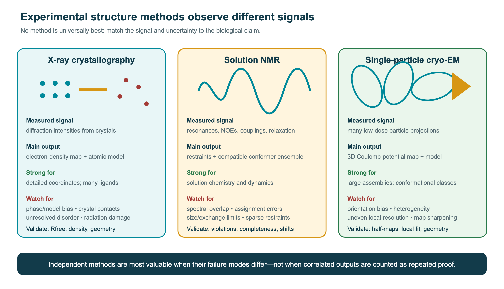
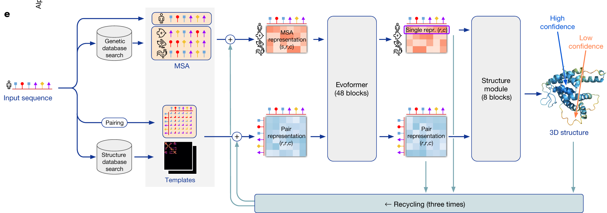
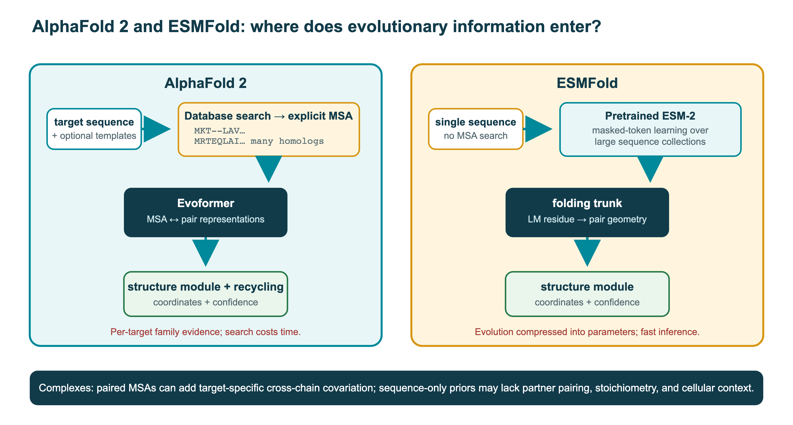

9 Protein structure
Knowledge of protein structure including domains and different methods to predict protein structure.
9.1 Overview
A protein’s function depends on its three-dimensional structure, and predicting structure from sequence was a grand challenge of computational biology for 50 years. In 2020, deep learning made it possible to predict the static structure of many single-chain proteins, in particular globular domains, with close to experimental accuracy. Conformational ensembles, disordered regions, the effects of mutations, many complexes, and states that depend on ligands, ions or conditions remain open problems. The field is moving fast, from single chains to complexes, ligands, dynamics and design. This chapter describes the state in October 2026. It covers:
- background: amino acids, thermodynamics and binding, and enzymes (Section 9.2);
- the levels of protein structure and the experimental methods: X-ray crystallography, NMR, cryo-EM and integrative modelling (Section 9.3);
- protein folding: Anfinsen’s dogma, stability, Levinthal’s paradox and funnels, and misfolding, amyloid and prions (Section 9.4);
- structure comparison, what it has revealed about structure evolution, and the structure databases (Section 9.5 and Section 9.6);
- CASP, the blind experiment that has measured progress in prediction since 1994, and its accuracy measures (Section 9.7);
- structure prediction, from secondary structure (and how it is assigned from coordinates), homology modelling with loops and side chains, fold recognition, fragment assembly and coevolution to AlphaFold2, AlphaFold3 and co-folding models; intrinsically disordered proteins; the limits of current methods and how to check a predicted model (Section 9.8);
- protein language models and structure (Section 9.9);
- membrane proteins (Section 9.10);
- molecular dynamics, Monte Carlo sampling, convergence and computational cost, normal modes, structures versus ensembles, optimisation and energy functions (force fields and statistical potentials), and docking (Section 9.11);
- protein design (Section 9.12).
The prediction of complexes is continued in Chapter 11, and the use of structure to predict function in Chapter 10.
9.2 Background: amino acids, energetics and enzymes
The methods in this chapter rest on undergraduate biochemistry: the chemistry of the amino acids, the thermodynamics of folding and binding, and enzyme kinetics. Examiners expect this background, so this section summarises it. The corresponding background on nucleic acids, genes and cells is in Section 6.2.
9.2.1 Amino acids
Proteins are linear polymers of 20 standard amino acids, joined by peptide bonds. The peptide bond is planar, so the conformation of the backbone is described by two torsion angles per residue, \(\phi\) and \(\psi\) (Section 9.3). The amino acids differ in their side chains, and their properties explain much of protein structure and evolution:
- hydrophobic side chains (Ala, Val, Leu, Ile, Met, Phe, Trp) are buried in the core of soluble proteins and face the lipids in membrane proteins;
- polar side chains (Ser, Thr, Asn, Gln, Tyr) form hydrogen bonds and are common on the surface;
- charged side chains, positive (Lys, Arg, His at low pH) and negative (Asp, Glu), form salt bridges and are found on the surface and in active sites;
- special cases: glycine, without a side chain, is flexible and common in turns; proline, whose side chain is bonded to the backbone, is rigid and breaks helices; cysteine can form disulfide bonds.
Substitution matrices such as PAM and BLOSUM (Section 1.3) reflect these properties: substitutions between similar amino acids, such as Ile and Val, are frequent in evolution, while substitutions involving Cys, Trp or Gly are rare.
9.2.2 Thermodynamics and binding
Whether a protein folds, and how strongly molecules bind, are questions of free energy, \(\Delta G = \Delta H - T\Delta S\), a balance of enthalpy (interactions) and entropy (disorder). The main forces are the hydrophobic effect, hydrogen bonds, electrostatic interactions and van der Waals contacts. The hydrophobic effect is the main driver of folding. At room temperature it is largely entropic: water molecules around non-polar groups are ordered, and burying the groups releases them. Folded proteins are only marginally stable (Section 9.4).
Binding of a ligand L to a protein P is described by the equilibrium dissociation constant, \(K_d = [\mathrm{P}][\mathrm{L}]/[\mathrm{PL}]\), which has units of concentration and equals the free ligand concentration at which half of the protein is bound. \(K_d\) is an equilibrium constant, not a rate; it equals the ratio of the dissociation and association rate constants, \(k_\text{off}/k_\text{on}\). It is not itself a free energy, but it is related to the standard binding free energy by
\[ \Delta G^\circ_\text{bind} = RT \ln \frac{K_d}{c^\circ}, \]
where \(c^\circ = 1\) M is the standard-state concentration (equivalently, \(\Delta G^\circ_\text{bind} = -RT \ln K_a\) with the dimensionless association constant \(K_a = c^\circ/K_d\)). The value of \(\Delta G^\circ\) therefore depends on the chosen standard state. A \(K_d\) of 1 nM corresponds to about \(-12.3\) kcal/mol at 25 °C, and each tenfold decrease in \(K_d\) (tighter binding) makes \(\Delta G^\circ_\text{bind}\) about 1.4 kcal/mol more negative (\(RT \ln 10\)). Typical \(K_d\) values range from millimolar for weak, transient interactions to picomolar for antibodies and tight complexes. Predicting binding affinities is one of the hardest problems in computational biology (Section 9.11).
9.2.3 Enzymes
Enzymes accelerate reactions by lowering the free energy of the transition state, without changing the equilibrium. Many reaction rates are increased by factors of \(10^{10}\) or more. For a simple enzyme, the rate depends on the substrate concentration [S] by the Michaelis–Menten equation,
\[ v = \frac{V_\text{max}[S]}{K_m + [S]}, \qquad V_\text{max} = k_\text{cat}[E]_\text{total}, \]
where \(K_m\) is the substrate concentration at half-maximal rate, and \(k_\text{cat}\) the turnover number, the number of reactions per enzyme per second. \(K_m\) is not in general the dissociation constant of the enzyme–substrate complex. For the scheme \(\mathrm{E} + \mathrm{S} \rightleftharpoons \mathrm{ES} \rightarrow \mathrm{E} + \mathrm{P}\), with rate constants \(k_1\), \(k_{-1}\) and \(k_\text{cat}\), \(K_m = (k_{-1} + k_\text{cat})/k_1\), which equals \(K_d = k_{-1}/k_1\) only when \(k_\text{cat} \ll k_{-1}\) (the rapid-equilibrium limit). A low \(K_m\) therefore does not by itself show tight substrate binding. The ratio \(k_\text{cat}/K_m\) measures catalytic efficiency. Inhibitors reduce activity, competitively by binding the active site or non-competitively elsewhere. Activity is regulated by allosteric effectors, which bind away from the active site and shift the enzyme between conformations, and by post-translational modifications such as phosphorylation (Section 8.5). Enzymes are classified by the reactions they catalyse (EC numbers, Section 10.2), and their parameters are collected in BRENDA. Membranes and membrane proteins are described in Section 9.10, and metabolism in Section 11.3. The next section turns from the chemistry of single residues to the structure of whole proteins and how it is determined.
See also: further explanation in Section D.9.1; related Wikipedia articles in Section E.9.1.
Parts of this section are adapted from the Wikipedia articles Amino acid, Peptide bond, Dissociation constant, Enzyme and Michaelis–Menten kinetics (CC BY-SA 4.0, retrieved 4 October 2026). For more detail, see Alberts et al. (2002) or Clark et al. (2018).
9.3 Protein structure and how it is determined
A protein’s function depends on its three-dimensional structure, and every prediction method is trained and tested on experimental structures. This section introduces the vocabulary of protein structure and the experimental methods that produced the roughly 260 000 structures in the Protein Data Bank (PDB) in 2026 (Section 2.5).
9.3.1 Levels of protein structure
Protein structure is described at four levels:
- Primary structure: the amino acid sequence.
- Secondary structure: local, regular conformations stabilised by backbone hydrogen bonds. Linus Pauling predicted the α-helix and the β-sheet in 1951 from the geometry of the peptide bond, before any protein structure was known (Pauling et al. 1951). The allowed combinations of the backbone torsion angles \(\phi\) and \(\psi\) are summarised in the Ramachandran plot (Ramachandran et al. 1963), still the first check of any structure model. Regions without regular structure are called loops or coils.
- Tertiary structure: the three-dimensional fold of a whole chain. Hydrophobic side chains are buried in a core, polar ones exposed to the solvent. Secondary structure elements pack against each other in a limited number of ways: helices pack at preferred angles determined by how their side-chain “ridges” fit into “grooves”, and β-sheets are twisted and pack face to face or roll into barrels (Chothia et al. 1977). Common combinations of a few elements, such as the β-hairpin, the helix–turn–helix or the β-α-β unit, are called supersecondary structures or motifs.
- Quaternary structure: the assembly of several chains into a complex.
Larger proteins consist of domains, compact units of typically 50–250 residues that often fold independently and are reused in different combinations during evolution (Section 1.7 and Section 3.6). Domains are classified by their fold, the arrangement and connectivity of their secondary structure elements, and grouped into superfamilies when there is evidence of common ancestry. From the first structures, Levitt and Chothia defined four structural classes: all-α, all-β, α/β (alternating helices and strands, mostly parallel sheets) and α+β (segregated helices and mostly antiparallel sheets) (Levitt and Chothia 1976). Jane Richardson’s drawings and taxonomy of structures, which introduced the ribbon diagram, shaped how structures are still visualised (Richardson 1981).
9.3.2 X-ray crystallography
The first protein structures, of myoglobin (Kendrew et al. 1958) and haemoglobin (PERUTZ et al. 1960), were solved by X-ray crystallography in Cambridge; Kendrew and Perutz received the Nobel Prize in Chemistry in 1962. In crystallography, a protein is crystallised, and the crystal diffracts an X-ray beam into a pattern of spots. The intensities of the spots give the amplitudes of the Fourier transform of the electron density, but not their phases (the phase problem). Phases are obtained from heavy-atom derivatives, from anomalous scattering, or, most often today, by molecular replacement with a similar known structure, increasingly a predicted model. An atomic model is then built into the electron density and refined against the data.
The quality of a crystal structure is described by:
- the resolution, the smallest spacing of the diffraction data used. At 3 Å, the backbone and most side chains can be traced; at better than 1.5 Å, individual atoms are resolved;
- the R-factor, the disagreement between the observed amplitudes and those calculated from the model. Because a model can be over-fitted to the data, Axel Brünger introduced the free R-factor, computed on a small set of reflections (typically 5%) that is excluded from refinement (Brünger 1992). \(R_\text{free}\) is a cross-validation statistic, the same idea as a held-out test set in machine learning (Chapter 12). A large gap between \(R\) and \(R_\text{free}\) indicates over-fitting.
Crystallography gives the most accurate structures and remains the main method for drug design, but proteins must crystallise, and crystal contacts can distort flexible regions. More than 80% of PDB entries (as of 2026) were determined by X-ray crystallography (citation needed).
9.3.3 NMR spectroscopy
Nuclear magnetic resonance (NMR) spectroscopy determines structures of proteins in solution. Kurt Wüthrich’s group solved the first protein structure by NMR in 1985 (Williamson et al. 1985), and Wüthrich shared the 2002 Nobel Prize in Chemistry. NMR measures interactions between atomic nuclei, such as the nuclear Overhauser effect, which gives distances between protons closer than about 5 Å. A structure is calculated as an ensemble of models consistent with these restraints. NMR provides information about dynamics that crystallography cannot, but it is limited to relatively small proteins, typically below 30–50 kDa.
9.3.4 Cryo-electron microscopy
In cryo-electron microscopy (cryo-EM), purified molecules are frozen in a thin layer of vitreous ice and imaged with an electron microscope. Each image is very noisy, so hundreds of thousands of particle images are aligned, classified and averaged to reconstruct a three-dimensional density map. Richard Henderson used electron crystallography of two-dimensional crystals to determine the structure of bacteriorhodopsin, a membrane protein, in 1990 (Henderson et al. 1990). For decades single-particle cryo-EM gave only low resolution, until direct electron detectors and new image-processing software, with Bayesian methods for classification and reconstruction (Scheres 2012), produced the resolution revolution around 2013 (Kühlbrandt 2014). Jacques Dubochet, Joachim Frank and Richard Henderson received the 2017 Nobel Prize in Chemistry. Resolution is estimated from the agreement between maps reconstructed from two independent halves of the data (the Fourier shell correlation), another form of cross-validation, and it usually varies across a map.
Cryo-EM needs no crystals, works best for large complexes and membrane proteins, and images individual molecules rather than an ordered lattice. Classification of the particle images can therefore separate several conformational or compositional states from the same sample, and newer methods model continuous variability between them. The relative numbers of particles give a rough indication of how populated the states are, which connects experimental structure to dynamics (Section 9.11), although sample preparation and freezing can shift these proportions. Cryo-EM now produces a large share of new structures, and cryo-electron tomography images complexes inside cells.

9.3.5 Integrative and lower-resolution methods
Many systems are too large, flexible or heterogeneous for any one of the three main methods. Integrative structural biology combines several kinds of data, each too sparse to determine a structure alone, into models that satisfy all of them (Rout and Sali 2019). Common sources of restraints are:
- small-angle X-ray scattering (SAXS), which gives the overall size and shape of molecules in solution, averaged over all orientations and conformations;
- cross-linking mass spectrometry, which shows which residues are within the reach of a chemical cross-linker (Section 11.2);
- hydrogen–deuterium exchange MS, which shows which parts of the backbone are protected from the solvent, for example by an interface (Section 8.5);
- FRET and electron paramagnetic resonance, which measure distances between labelled sites, together with mutagenesis, low-resolution cryo-EM or tomography maps, and atomic structures or predicted models of the components.
A landmark example is the yeast nuclear pore complex, a ring of more than 500 protein copies whose architecture was determined by combining cryo-electron tomography, cross-links, SAXS and structures of subcomplexes (Kim et al. 2018). Integrative models are archived in PDB-IHM (Section 2.5). Their reliability is assessed as for other models: by how precise the ensemble of solutions is, and, most convincingly, by whether they agree with data that were not used to build them. Fitting the same data repeatedly, or several data sets with correlated errors, increases apparent precision without adding evidence. The same principle applies when experimental data are used to check a predicted model (Section 9.8).
9.3.6 Experimental structures and predicted models
All experimental structures are models fitted to data, with errors that depend on the method and the resolution. Validation reports from the wwPDB compare each model with its data and with expected geometry (Burley et al. 2018). Since 2021, predicted structures have become as important as experimental ones for many purposes (Section 9.8). Experiments and prediction are now integrated: predicted models are used to phase crystallographic data, to interpret cryo-EM maps and to guide experiments, while experimental structures remain the ground truth on which predictors are trained and evaluated. Why a sequence adopts one structure at all is the subject of the next section (Section 9.4).
See also: further explanation in Section D.9.2; related Wikipedia articles in Section E.9.2.
Parts of this section are adapted from the Wikipedia articles Protein structure, Protein secondary structure, Ramachandran plot, X-ray crystallography, R-factor (crystallography), Protein nuclear magnetic resonance spectroscopy and Cryogenic electron microscopy (CC BY-SA 4.0, retrieved 4 October 2026). Parts of this section are adapted from Matteo Tadiello, Modern Bioinformatics: From Foundations to Frontiers, chapter “Protein Structure: Evidence, Models, and Dynamics” (CC BY 4.0), used with permission.
9.4 Protein folding
Many proteins fold from a chain of amino acids into a well-defined three-dimensional structure, and the physics of folding explains both why structure prediction is possible and why it was hard. The folding problem has three parts: the physical question of what determines the native structure, the kinetic question of how proteins fold so fast, and the computational question of predicting the structure from the sequence (Dill and MacCallum 2012). The third is the subject of Section 9.8. This section covers the first two, and what happens when folding goes wrong.
9.4.1 Anfinsen’s dogma
In the 1950s and 1960s Christian Anfinsen showed that ribonuclease A, unfolded by urea and with its disulfide bonds reduced, refolds spontaneously into its active structure when the denaturant is removed. He concluded that, for a small globular protein in a given environment (solvent, pH, temperature, and any required cofactors or partners), the information needed to specify the native structure is contained in the amino acid sequence, and that the native structure is the conformation of lowest free energy under those conditions, the thermodynamic hypothesis (Anfinsen 1973). He received the 1972 Nobel Prize in Chemistry. The hypothesis is not the claim that sequence alone always determines a single structure. Anfinsen’s dogma is the justification for predicting structure from sequence, and it has important exceptions and qualifications: the structure depends on the environment (a membrane, bound metals, cofactors or partner proteins); some proteins need chaperones to avoid aggregation (although chaperones do not change the final structure); some are kinetically trapped in states that are not the global minimum; some switch between folds; and many proteins or regions are intrinsically disordered (Section 9.8 and Section 3.6).
Even a well-folded protein does not have one rigid structure. The native state is an ensemble of closely related conformations, with side chains, loops and sometimes whole domains in motion, and some proteins populate two or more distinct functional states. A crystal structure or a predicted model shows one representative of this ensemble, often the most populated state or one stabilised by crystal contacts or bound ligands. Accuracy measures for predictions (Section 9.7) should be read with this in mind; dynamics and ensembles are discussed in Section 9.11.
9.4.2 Free energy and marginal stability
The native state is stable because of a balance of large opposing contributions. The hydrophobic effect (Section 9.2) drives the burial of non-polar side chains in the core. Hydrogen bonds, van der Waals packing and electrostatic interactions stabilise the folded state, while folding costs a large loss of conformational entropy of the chain. The net result is that most proteins are only marginally stable: the free energy of unfolding, \(\Delta G\), is typically only 5–15 kcal/mol (citation needed), the equivalent of a few hydrogen bonds. A single mutation can change it by 1–3 kcal/mol, which is why many disease mutations act by destabilising proteins, and why stability constrains evolution (Section 3.6). Small single-domain proteins often fold in a cooperative two-state transition, with only the unfolded and the native states populated at equilibrium (Jackson and Fersht 1991).
9.4.3 Levinthal’s paradox and folding funnels
In the 1960s Cyrus Levinthal pointed out that if each residue of a 100-residue chain could adopt only three conformations, there would be \(3^{100} \approx 10^{48}\) conformations. Sampling them at a rate of \(10^{13}\) per second would take far longer than the age of the universe, yet real proteins fold in microseconds to seconds (Levinthal 1968). Folding therefore cannot be a random search. Levinthal suggested that folding follows specific pathways guided by local interactions.
The modern resolution of the paradox is the energy landscape theory (Bryngelson et al. 1995; Dill and Chan 1997). Proteins evolved to have funnel-shaped free-energy landscapes: as the chain forms more native contacts, its energy decreases, so most moves lead downhill towards the native state, and there are many parallel routes rather than a single pathway. The width of the funnel represents the conformational entropy, which decreases as the chain folds. Real landscapes are rugged, with local minima in which the chain can be temporarily trapped, which explains intermediates and misfolding. Natural sequences are thought to be minimally frustrated: their interactions are mostly consistent with the native structure, unlike random sequences.
Protein-engineering experiments by Alan Fersht and colleagues measured how mutations change folding rates relative to stability (φ-value analysis) (Matouschek et al. 1989), and so showed which parts of the structure are formed in the transition state. Molecular dynamics simulations on the special-purpose computer Anton finally made it possible to watch small proteins fold and unfold repeatedly at atomic detail (Shaw et al. 2010; Lindorff-Larsen et al. 2011) (Section 9.11). They showed that fast-folding proteins fold along a small number of routes, often starting with native secondary structure, consistent with the funnel picture.
9.4.4 Misfolding, amyloid and prions
The native state is not the only deep minimum. Partly folded or unfolded chains expose hydrophobic segments and can aggregate, and one ordered aggregate is accessible to almost any polypeptide: the amyloid fibril (Chiti and Dobson 2017). Amyloid has a cross-β structure, in which β-strands run perpendicular to the fibril axis and are hydrogen-bonded into sheets that run along it, giving the characteristic X-ray fibre diffraction spacings of about 4.7 Å between strands and about 10 Å between sheets. Crystal structures of short amyloid-forming peptides showed pairs of sheets whose side chains interlock in a dry steric zipper (Sawaya et al. 2007). Because the backbone hydrogen bonds are shared by all sequences, amyloid can be more stable than the native fold at high concentration, so the native state of many proteins is only kinetically protected, by chaperones, degradation and their sequences, against aggregation. Anfinsen’s hypothesis concerns the folding of a single chain, not this concentration-dependent alternative.
Aggregation is usually nucleated by short aggregation-prone regions of five to ten residues that are hydrophobic, have a high β-strand propensity and a low net charge. In folded proteins they are mostly buried, and they are often flanked by charged residues or prolines that act as gatekeepers. Predictors identify them from sequence: TANGO uses a statistical-mechanics model of competing conformations (Fernandez-Escamilla et al. 2004), and Waltz uses position-specific scoring matrices trained on amyloid-forming hexapeptides (Maurer-Stroh et al. 2010). They are used to explain disease mutations and to reduce aggregation in therapeutic and designed proteins.
Prions are proteins whose misfolded, aggregated form converts the normal form into more of itself. Stanley Prusiner proposed that the agent of scrapie, and later of Creutzfeldt–Jakob disease and bovine spongiform encephalopathy, is a protein, the prion protein PrP, without nucleic acid (Prusiner 1982) (Nobel Prize in Physiology or Medicine, 1997). Wickner proposed, from genetic evidence, that the yeast trait [URE3] is a prion form of the Ure2 protein (Wickner 1994); yeast prions such as [URE3] and [PSI+] are inherited through the cytoplasm, so protein conformation can carry heritable information. The same templated growth occurs, in a less infectious form, in the spread of aggregates between cells in neurodegenerative diseases.
Fibrils are not crystals, and their atomic structures were long unknown. Since 2017, cryo-EM has determined many of them at near-atomic resolution (Section 9.3): tau filaments from the brain of a patient with Alzheimer’s disease (Fitzpatrick et al. 2017), amyloid-β(1–42) (Gremer et al. 2017) and α-synuclein, the protein of Parkinson’s disease (Guerrero-Ferreira et al. 2018). Each layer of a fibril is one chain folded into a flat, often intricate, arrangement of β-strands, quite different from its native or disordered state. The same protein can form several polymorphs; different tauopathies have different tau folds, which supports the idea that structural strains underlie different diseases, and fibrils formed in vitro often differ from those extracted from patients. AlphaFold and similar predictors, trained mainly on globular proteins and predicting single chains or defined complexes, do not reliably predict these folds.
Not all amyloid is pathological. Functional amyloids include the curli fibres of Escherichia coli biofilms, which are assembled by a dedicated secretion and nucleation machinery (Chapman et al. 2002), fibres in mammalian melanosomes, and stores of peptide hormones in secretory granules (Sawaya et al. 2021). Their existence shows that cells can control amyloid formation, and that the cross-β fold is part of normal biology.
9.4.5 Folding and prediction
AlphaFold and related methods predict the native structure of many proteins very accurately without simulating folding at all (Section 9.8). They learn the mapping from sequence and evolutionary information to structure from the PDB. This largely solved the practical problem of predicting a static structure for most single-chain globular proteins, but not the physical question of how folding happens. The models do not give folding pathways, are less reliable for the effects of single mutations on stability, and predict one structure even for proteins that switch between several. Folds are, however, conserved in evolution, and comparing them is the subject of Section 9.5.
See also: further explanation in Section D.9.3; related Wikipedia articles in Section E.9.3.
Parts of this section are adapted from the Wikipedia articles Protein folding, Anfinsen’s dogma, Levinthal’s paradox, Folding funnel and Hydrophobic effect (CC BY-SA 4.0, retrieved 4 October 2026).
9.5 Structure comparison and evolution
Comparing structures is needed to evaluate predictions, to classify proteins, and to detect evolutionary relationships that are no longer visible in the sequence. Among homologues, structure usually changes much more slowly than sequence: proteins with less than 20% sequence identity, in the “midnight zone” of sequence comparison (Section 1.2), often have the same fold and superimpose closely (Chothia and Lesk 1986). This is an empirical tendency, not a law. A few mutations can switch a protein to a different fold, and similar folds can arise independently by convergence, so structural similarity alone does not prove common ancestry. With these caveats, structural similarity is often the most sensitive evidence for distant homology.
9.5.1 Measures of similarity
The simplest measure is the root-mean-square deviation (RMSD) between equivalent atoms (usually Cα atoms) after optimal superposition,
\[ \text{RMSD} = \sqrt{\frac{1}{N} \sum_{i=1}^{N} \lVert \mathbf{x}_i - \mathbf{y}_i \rVert^2}, \]
where the optimal rotation is found analytically, for example with the Kabsch algorithm. RMSD has three problems. It requires a known correspondence between residues; it is dominated by the largest deviations, so two structures with an identical core and one different loop or a domain movement get a large RMSD; and it depends on the length of the protein, so values for proteins of different size cannot be compared directly.
The TM-score solves the last two problems (Zhang and Skolnick 2004):
\[ \text{TM-score} = \max \frac{1}{L} \sum_{i=1}^{N} \frac{1}{1 + (d_i/d_0(L))^2}, \]
where \(d_i\) is the distance between the \(i\)th pair of aligned residues, \(L\) the length of the reference protein, and \(d_0(L) = 1.24\sqrt[3]{L-15} - 1.8\) Å a length-dependent scale chosen so that random structure pairs give similar scores regardless of size. The maximum is taken over superpositions. Each residue contributes between 0 and 1, so distant pairs contribute little instead of dominating. TM-scores above 0.5 indicate generally the same fold, and those below about 0.17 random similarity. GDT_TS and lDDT, used in CASP, are described in Section 9.7.
9.5.2 Structural alignment
Structural alignment finds the residue correspondence that makes two structures as similar as possible, without using the sequence. Since the correspondence and the superposition depend on each other, the problem is hard, and all programs use heuristics (Kolodny et al. 2005):
- DALI, by Liisa Holm and Chris Sander, compares the matrices of intramolecular Cα–Cα distances of the two proteins. It looks for sub-matrices (fragment pairs) with similar distance patterns and assembles them into an alignment with Monte Carlo optimisation (Holm and Sander 1993). Because it compares internal distances, it needs no superposition and can align structures with different topologies of the same contacts. DALI was used to map the protein structure universe (Holm and Sander 1996) and is still widely used (Holm 2019).
- TM-align iterates between superposition and alignment: it starts from several initial alignments, computes the superposition that maximises the TM-score, and realigns the residues with dynamic programming using the distances after superposition (Zhang and Skolnick 2005).
- Foldseek made structure search as fast as sequence search (van Kempen et al. 2023). It describes the local tertiary environment of each residue with a letter from a learned 20-letter 3Di structural alphabet, so that each structure becomes a string, which can be searched with the fast prefilters and alignment algorithms of MMseqs2 (Section 1.4). Foldseek is four to five orders of magnitude faster than DALI or TM-align, with most of their sensitivity, and made it possible to search and cluster the hundreds of millions of predicted structures in the AlphaFold Database (Barrio-Hernandez et al. 2023).
9.5.3 What structure comparison has shown
Comparisons of the growing number of structures showed that the number of distinct folds is limited. Chothia estimated in 1992 that most proteins belong to no more than about 1000 families (Chothia 1992). Domains are also very unevenly spread over the folds. Orengo and colleagues found that about ten superfolds, such as the TIM barrel, the Rossmann fold and the α/β plaits, each contain several superfamilies with no detectable common ancestry, and together hold a large share of all known domains (Orengo et al. 1994). The term comes from a time with a few thousand structures, but the uneven distribution has held. As more structures were determined, new folds became rarer. The AlphaFold Database, covering almost all known proteins, confirmed this. Clustering its 214 million predicted structures with Foldseek gave 2.3 million non-singleton clusters. About 31% of the clusters had no annotation and may represent previously undescribed structures, but together they contain only 4% of the proteins: most proteins belong to known families. The comparison also revealed remote relationships, for example between human immune-related proteins and prokaryotic ones (Barrio-Hernandez et al. 2023). A domain-level analysis of the same database, The Encyclopedia of Domains (TED), gives the same picture (Lau et al. 2024). Of its 365 million domains, 77% of the non-redundant ones are similar to known CATH superfamilies, and the most populated superfamilies became even more dominant. Most CATH folds are found in all three superkingdoms. About a fifth of the domains could not be linked to a known superfamily; these are candidate new folds, very divergent relatives or poor models. Among them are several thousand candidate new folds, many of them highly symmetric repeat architectures such as an 11-bladed β-propeller (Lau et al. 2024; Durairaj et al. 2023). New folds therefore still exist, but they are a small part of the protein universe, and fold space looks more like a continuum than a set of discrete folds. Structure comparison has also shown that proteins with the same function can have different folds (convergent evolution), and that the same fold can carry very different functions, which limits how far function can be transferred by structural similarity (Chapter 10). The classifications and archives that hold these structures are summarised next.
See also: further explanation in Section D.9.4; related Wikipedia articles in Section E.9.4.
9.6 Protein structure databases
The databases of structures are described in detail in Section 2.5, and the domain classifications in Section 1.7. In brief:
- The Protein Data Bank (PDB), founded in 1971, is the single archive of experimental structures, about 260 000 entries in 2026 (Berman et al. 2000; Burley et al. 2018).
- SCOP (1995) classifies domains manually by class, fold, superfamily and family, with superfamilies defined by evidence of common ancestry (Murzin et al. 1995; Andreeva et al. 2019). Its four structural classes go back to
- CATH classifies domains by Class, Architecture, Topology (fold) and Homologous superfamily, with more automation (Sillitoe et al. 2020).
- ECOD emphasises evolutionary relationships, with a level of “possible homology” above the superfamily, and is updated weekly (Cheng et al. 2014).
- TED (The Encyclopedia of Domains) applied automatic domain parsing and classification to the AlphaFold Database, identifying hundreds of millions of domains in predicted structures (Lau et al. 2024).
- The AlphaFold Protein Structure Database contains predicted structures for more than 200 million proteins, almost all of UniProt (Varadi et al. 2023; Bertoni et al. 2025).
- The ESM Metagenomic Atlas contains more than 600 million structures of metagenomic proteins predicted with ESMFold (Lin et al. 2023) (Section 9.9).
How well predicted structures agree with experimental ones is measured in the blind tests of CASP (Section 9.7).
See also: further explanation in Section D.9.5; related Wikipedia articles in Section E.9.5.
Parts of this section are adapted from the Wikipedia articles Root-mean-square deviation of atomic positions, Template modeling score, Structural alignment, Structural Classification of Proteins database and CATH database (CC BY-SA 4.0, retrieved 4 October 2026).
9.7 CASP: a blind test of structure prediction
Much of the history of structure prediction can be told through one experiment, and its lesson, that a method must be tested on data it has not seen, applies to every prediction method in the book. The Critical Assessment of protein Structure Prediction (CASP) was started in 1994 by John Moult and colleagues (Moult et al. 1995). Before CASP, methods were usually tested on structures that were already known, often by their developers, and claims of success were hard to evaluate. CASP introduced a simple principle: predictions must be made blind. Every second year, the organisers collect sequences of proteins whose structures have been determined, or are about to be, but are not yet public. Today most targets are unpublished structures contributed by experimental groups, and they include not only single proteins but also assemblies, RNA and protein–ligand complexes. Predictors submit models before the structures are released, and independent assessors compare the models with the experimental structures. CASP is organised by the Protein Structure Prediction Center at UC Davis.
9.7.1 Categories and metrics
Targets were originally classified by how much information was available: comparative modelling targets, with a clear template in the PDB; fold recognition targets, with a template that is hard to find; and free modelling (originally ab initio) targets, with no known related structure. Over the years CASP added categories for residue contacts, model quality estimation, refinement, complexes (assembly), ligands, RNA and conformational ensembles. Two community experiments complement it: CAPRI (Critical Assessment of PRedicted Interactions) for protein docking, running since 2001 (Janin et al. 2003), and CAMEO, which evaluates servers every week on newly released PDB entries (Haas et al. 2017).
The experimental structure used as reference is itself a model of one state. For many proteins the native state is an ensemble of conformations (Section 9.4), and flexible regions may be absent or poorly defined. Comparing a model with the experimental structure therefore requires measures that are robust to errors in part of the model:
- RMSD after optimal superposition is dominated by the worst-predicted regions, so a model with a correct core and one misplaced loop gets a poor score (Section 9.5).
- GDT_TS (global distance test, total score) is the average percentage of residues that can be superimposed within 1, 2, 4 and 8 Å of the experimental positions, each maximised over many superpositions (Zemla 2003). It ranges from 0 to 100, and values above about 90 are considered competitive with experimental accuracy (citation needed).
- The TM-score (Section 9.5) is independent of protein length; values above 0.5 indicate the same fold (Zhang and Skolnick 2004).
- lDDT (local distance difference test) does not superimpose at all. It measures the fraction of interatomic distances in the reference, within an inclusion radius of 15 Å, that are preserved in the model within tolerances of 0.5, 1, 2 and 4 Å (Mariani et al. 2013). Because it is local, it is robust to domain movements, and its predicted version, pLDDT, is the confidence measure of AlphaFold (Section 9.8).
- For complexes, DockQ combines the fraction of native contacts, the interface RMSD and the “ligand” RMSD (of the smaller chain after superposition on the larger) into one score between 0 and 1 (Basu and Wallner 2016); models above 0.23 are conventionally called acceptable and above 0.8 high quality.
9.7.2 What CASP has shown
The CASP record documents both slow progress and sudden jumps (Kryshtafovych et al. 2021):
- 1994–2004. Comparative modelling was useful when templates were close, and fold recognition by threading and profile–profile alignment improved steadily. Ab initio predictions were mostly wrong, until fragment-assembly methods, especially Rosetta, produced the first correct folds of small proteins in CASP3–CASP5 (1998–2002).
- 2006–2016. Progress was incremental. Consensus methods (meta-servers) and model quality estimation became important. From CASP11 (2014), coevolution methods made it possible to predict some large proteins correctly without templates, when deep alignments were available.
- 2018 (CASP13). Deep-learning prediction of residue distances, by several groups and most strikingly by DeepMind’s first AlphaFold (Senior et al. 2020), gave a large jump for free-modelling targets.
- 2020 (CASP14). AlphaFold2 produced models with a median GDT_TS of about 92 across all targets, comparable to experimental accuracy for most single domains (Jumper, Evans, Pritzel, Green, Figurnov, Ronneberger, Tunyasuvunakool, Bates, Žídek, Potapenko, Bridgland, Meyer, Kohl, Ballard, Cowie, Romera-Paredes, Nikolov, Jain, Adler, Back, Petersen, Reiman, Clancy, Zielinski, Steinegger, Pacholska, Berghammer, Bodenstein, et al. 2021; Jumper, Evans, Pritzel, Green, Figurnov, Ronneberger, Tunyasuvunakool, Bates, Žídek, Potapenko, Bridgland, Meyer, Kohl, Ballard, Cowie, Romera-Paredes, Nikolov, Jain, Adler, Back, Petersen, Reiman, Clancy, Zielinski, Steinegger, Pacholska, Berghammer, Silver, et al. 2021). The organisers declared that the prediction of single-domain protein structures was largely solved; this referred to static structures of single chains, not to ensembles, complexes or ligands.
- 2022 (CASP15) and 2024 (CASP16). Almost all groups built on AlphaFold2 or, in CASP16, on AlphaFold3. AlphaFold3 was not a new entrant in the way AlphaFold2 was in CASP14: it was released during CASP16, and many participants used its public server as one component of their pipelines, together with better alignments, extensive sampling and model selection. In CASP16 no single-domain target was predicted with the wrong fold. The remaining challenges are large complexes, flexible and interaction-dependent regions, RNA, ligands and alternative conformations (Kryshtafovych et al. 2023; Yuan et al. 2025).
CASP inspired similar blind assessments in other fields, such as CAPRI for docking, CAFA for function prediction (Chapter 10) and CAMI for metagenomics (Section 5.5). Its general lesson is that a method is only as good as its performance on data it has not seen, a theme that returns in Chapter 12. Outside blind tests, benchmarks of structure predictors must control for overlap between the test proteins and the templates or training structures the method has access to; such leakage inflates apparent accuracy (Section 12.2). The methods behind the CASP record are described in Section 9.8.
See also: further explanation in Section D.9.6; related Wikipedia articles in Section E.9.6.
Parts of this section are adapted from the Wikipedia articles CASP, Global distance test and Template modeling score (CC BY-SA 4.0, retrieved 4 October 2026).
9.8 Protein structure prediction
Predicting the structure of a protein from its sequence was one of the grand challenges of computational biology for 50 years. Anfinsen’s dogma (Section 9.4) said that it should be possible; the size of the conformational space and the inaccuracy of energy functions made it hard. The history of the field is a sequence of ideas, each of which used more of the information hidden in evolution, until deep learning combined them in 2020. Progress was measured throughout by CASP (Section 9.7).
9.8.1 Secondary structure prediction
The first methods predicted only secondary structure, the state (helix, strand or coil) of each residue.
- Chou–Fasman (1974) used the propensity of each amino acid to occur in helices and strands, computed from the few structures then known, with rules for nucleating and extending elements (Chou and Fasman 1974a, 1974b).
- GOR (1978) used information theory to include the influence of neighbouring residues in a window of 17 residues (Garnier et al. 1978).
Both reached about 60% accuracy (Q3, the percentage of residues correctly predicted in three states). The limit was the information used: local sequence only partly determines local structure, because the same short peptide can adopt different conformations in different proteins. The breakthrough came from evolution. PHD, by Burkhard Rost and Chris Sander, fed multiple sequence alignments of homologous proteins into a neural network, raising accuracy above 70% (Rost and Sander 1993): a family of sequences shows which positions are conserved, hydrophobic or variable, which the single sequence cannot. PSIPRED used PSI-BLAST profiles and reached 76.5–78.3%, depending on how the observed states were defined (Jones 1999). Modern deep-learning methods reach about 85%, close to the limit set by the ambiguity of assigning secondary structure in experimental structures (citation needed).
9.8.2 Assigning secondary structure from coordinates
To train and test predictors, the “true” secondary structure must first be assigned from experimental coordinates, and this is less objective than it sounds. DSSP (Kabsch and Sander, 1983), the standard program, finds backbone hydrogen bonds with a simple electrostatic model: partial charges on the C=O and N–H groups give an energy, and a hydrogen bond is counted if it is below \(-0.5\) kcal/mol (Kabsch and Sander 1983). Secondary structure is then defined by patterns of hydrogen bonds: repeated \(i \rightarrow i+4\) turns form an α-helix, and ladders of bridges between strands form a β-sheet. DSSP assigns eight states:
- H: α-helix; G: \(3_{10}\)-helix; I: π-helix;
- E: strand in a β-ladder; B: isolated β-bridge;
- T: hydrogen-bonded turn; S: bend (a geometric criterion only);
- and blank (often written C or “–”): none of these, loosely called coil.
For prediction, the eight states are reduced to three. A common reduction is H, G, I → helix; E, B → strand; everything else → coil, but some benchmarks map only H and E, and the choice changes Q3 by a few percentage points, so the reduction must be stated when methods are compared. STRIDE combines hydrogen-bond energies with backbone torsion angles, with parameters tuned to agree with the assignments made by crystallographers (Frishman and Argos 1995). DSSP and STRIDE agree for most residues but differ at the ends of helices and strands, for \(3_{10}\) and π helices, for irregular or bulged strands, and in low-resolution structures; NMR models of one protein can differ among themselves. This disagreement is one reason why Q3 cannot reach 100%.
Q3 also has a weakness as a measure: it counts residues, not elements. A prediction that shifts the ends of every helix by one residue, and one that breaks a helix into fragments or misses a short strand completely, can have the same Q3. The segment overlap score (SOV) compares predicted and observed segments and tolerates small shifts at their boundaries, so it rewards predictions that get the number, type and approximate position of the elements right (Rost et al. 1994; Zemla et al. 1999). Q3 and SOV are usually reported together.
9.8.3 Homology modelling
If a protein of known structure is homologous to the query, the structure of the query can be modelled on it, since homologous proteins usually have similar structures (Section 9.5). Homology modelling (comparative modelling) has four steps:
- Template search: finding related structures, with sequence or profile searches against the PDB (Chapter 1).
- Alignment of query and template, the most critical step; errors here cannot be corrected later.
- Model building: copying the coordinates of aligned regions, and modelling loops and side chains. MODELLER builds the model by satisfying spatial restraints derived from the template, such as distances and angles, together with stereochemical rules (Šali and Blundell 1993).
- Evaluation of model quality.
The accuracy of the model depends mainly on the sequence identity to the template: above about 50%, models are close to medium-resolution experimental structures, while below 30% alignment errors dominate (citation needed). Tools such as SWISS-MODEL made homology modelling routine (Waterhouse et al. 2018).
9.8.4 Loops and side chains
After the aligned core has been copied, two parts of a homology model remain: loops and side chains. Loops, the insertions relative to the template and the regions where the template differs, are usually the least accurate part of a model, and accuracy falls with loop length. Database methods search known structures for fragments whose ends fit the geometry of the two anchor residues and whose sequences are similar; they work well for short loops. Ab initio (conformational search) methods sample loop conformations and score them with an energy function, as MODELLER does (Fiser et al. 2000). A loop must close exactly between its anchors, which makes random sampling inefficient. Kinematic closure (KIC) in Rosetta, borrowed from robotics, samples the torsions of most loop residues freely and solves analytically for six torsions that close the chain, and reconstructed many 12-residue loops with sub-ångström accuracy (Mandell et al. 2009).
Side chains adopt a limited number of preferred combinations of their torsion angles \(\chi_1, \chi_2, \ldots\), called rotamers, mostly with staggered torsions. Rotamer libraries list them with their frequencies (Ponder and Richards 1987). Dunbrack and Karplus showed that the frequencies depend on the backbone torsions \(\phi\) and \(\psi\), and the backbone-dependent rotamer library (Dunbrack and Karplus 1993), now a smoothed version derived from high-resolution structures (Shapovalov and Dunbrack 2011), is used by most modelling and design programs. Placing side chains then becomes a combinatorial problem: choose one rotamer per residue to minimise an energy with terms for each rotamer and each pair of rotamers. Dead-end elimination removes rotamers that cannot be part of the global minimum (Desmet et al. 1992); SCWRL4 splits the graph of interacting residues into small clusters that can be solved exactly (Krivov et al. 2009); and the Rosetta packer uses Monte Carlo with simulated annealing over rotamers (Section 9.11). The packer is the same algorithm used for design, where the rotamers of all allowed amino acids compete at each position (Section 9.12). Buried side chains are placed much more accurately than exposed ones, and accuracy drops when the backbone itself is inaccurate.
Rosetta, which began as a fragment-assembly program (below), grew into a software suite that shares one energy function (Alford et al. 2017) across loop modelling, packing, refinement, docking and design (Leman et al. 2020). MODELLER instead optimises all restraints of the model together, and SWISS-MODEL builds models from templates with its own loop and side-chain modelling. Deep-learning predictors removed these separate steps. AlphaFold2 predicts side-chain torsion angles in its structure module, and AlphaFold3 generates all atoms with diffusion, so loops and side chains are predicted together with the rest of the structure and are generally reliable where pLDDT is high. Rotamer libraries and packers remain essential in design, for modelling mutations and for refining models against experimental data.
9.8.5 Fold recognition and threading
Many proteins have a known fold but no detectable sequence similarity to it. Fold recognition asks which known fold a sequence is most compatible with. Bowie, Lüthy and Eisenberg described each structure as a 3D profile, the environment of each position (buried or exposed, in which secondary structure), and scored sequences against it (Bowie et al. 1991). David Jones and colleagues introduced threading: the query sequence is placed onto the backbone of each template and scored with statistical pair potentials derived from known structures (Jones et al. 1992). Later methods combined sequence profiles with predicted secondary structure and solvent accessibility (Fischer and Eisenberg 1996), and profile–profile comparison, in particular the comparison of profile hidden Markov models in HHsearch and HHpred (Söding 2004), became the most sensitive way to detect templates (Section 1.6).
9.8.6 De novo prediction and fragment assembly
For proteins with no template, structures must be predicted from scratch, by searching conformational space for low-energy structures. Two problems make this hard: the search space is enormous (Section 9.4), and the energy functions are not accurate enough to recognise the native state reliably. Fragment assembly reduced the search space: short fragments (three and nine residues) from known structures, chosen by local sequence similarity, are combined by Monte Carlo search, and scored with knowledge-based energy functions. David Baker’s Rosetta (Simons et al. 1997) and David Jones’s FRAGFOLD (Jones 2001) produced the first successful de novo predictions of small proteins in CASP. With extensive sampling and all-atom refinement, Rosetta could reach atomic accuracy for some small proteins (Bradley et al. 2005). In general, however, de novo methods worked only for proteins smaller than about 100 residues.
9.8.7 Coevolution
The idea that would eventually lead to the breakthrough was old. Residues in contact in a structure must remain compatible: if one mutates, its partner often mutates in a compensating way. Such correlated mutations should be visible in multiple sequence alignments (Göbel et al. 1994). For nearly two decades this had little practical effect, because correlations are also transmitted indirectly: if A contacts B and B contacts C, A and C appear correlated without being in contact. Shared phylogeny adds further correlations between positions that are not in contact, since closely related sequences share many residues by descent (Chapter 4).
The solution was to fit a global statistical model of the whole alignment, a Potts model (a Markov random field) with fields for each position and couplings for each pair, so that direct couplings can be separated from indirect correlations. This direct-coupling analysis (DCA) (Weigt et al. 2009; Morcos et al. 2011), and fast approximations such as pseudo-likelihood methods (Ekeberg et al. 2013) and sparse inverse covariance estimation (PSICOV) (Jones et al. 2011), predicted contacts accurate enough to fold proteins from sequence alone (Marks et al. 2011; Marks et al. 2012). Similar sequences are down-weighted to reduce the phylogenetic signal, and the method requires many effectively independent sequences, typically more than a few times the protein length. Metagenomic sequences extended it to many more families (Ovchinnikov et al. 2017).
Contacts form patterns, such as the parallel diagonals of β-sheets, so the next step was to predict contact maps with machine learning that recognised these patterns (Skwark et al. 2014), and then with deep convolutional networks that treated the coevolution matrix as an image (Wang et al. 2017). In CASP13 (2018), networks predicting full distance distributions rather than binary contacts, combined with gradient-descent optimisation of the structure, gave a large improvement; DeepMind’s first AlphaFold was the best of these (Senior et al. 2020).
9.8.8 AlphaFold2
At CASP14 (2020), AlphaFold2 produced models comparable to experimental structures for most targets (Jumper, Evans, Pritzel, Green, Figurnov, Ronneberger, Tunyasuvunakool, Bates, Žídek, Potapenko, Bridgland, Meyer, Kohl, Ballard, Cowie, Romera-Paredes, Nikolov, Jain, Adler, Back, Petersen, Reiman, Clancy, Zielinski, Steinegger, Pacholska, Berghammer, Bodenstein, et al. 2021). Its main components are:
- Inputs: a multiple sequence alignment of the query, built with sensitive searches of large sequence databases including metagenomes, and optionally structural templates. Even when no template is supplied, the trained network has encoded structural knowledge from the PDB, so “template-free” should be read as “no explicit template used”, not as prediction without prior structural knowledge.
- The Evoformer: a deep network of 48 blocks that maintains two representations, an MSA representation (sequences × residues) and a pair representation (residues × residues). Attention operates along rows and columns of the MSA, information flows between the two representations, and triangle updates on the pair representation enforce geometric consistency, analogous to the triangle inequality of distances.
- The structure module converts the pair and single representations into 3D coordinates. Each residue is treated as a rigid body (a frame), positioned with an attention mechanism that is invariant to global rotation and translation (invariant point attention), and side-chain torsion angles are predicted.
- Recycling: the output is fed back through the network several times.
- Training on structures in the PDB, followed by self-distillation on high-confidence predictions of unlabelled sequences, with a loss based on frame-aligned errors and auxiliary losses on distances and on the masked MSA.

AlphaFold2 also predicts its own accuracy. These measures are the network’s estimates, not measured accuracy, and each answers a different question:
- pLDDT is a predicted lDDT score for each residue: the model’s confidence in the local structure around that residue. It is not the probability that the region is folded, and says nothing about the relative placement of domains. Low pLDDT often indicates intrinsically disordered regions (see below).
- The predicted aligned error (PAE) is the expected error in the position of residue \(j\) when the predicted and true structures are aligned on residue \(i\). It shows whether the relative positions of domains, or of chains in a complex, are reliable.
- pTM and, for complexes, ipTM are predicted TM-scores, computed from the same predicted aligned errors, for the whole model and for the interfaces between chains (Section 11.4). Confident individual chains (high pLDDT) do not imply a correct interface.
A predicted structure is therefore a hypothesis with an estimated reliability, not a measurement.
The code was released in 2021, and DeepMind and EMBL-EBI used it to predict structures for almost all known proteins (Section 9.6). Demis Hassabis and John Jumper shared the 2024 Nobel Prize in Chemistry with David Baker. RoseTTAFold, from Baker’s group, used a three-track network (sequence, distance and 3D coordinates) and reached similar accuracy (Baek et al. 2021). ColabFold made prediction fast and accessible by replacing the slow alignment step with MMseqs2 searches (Mirdita et al. 2022), and OpenFold retrained AlphaFold2 from scratch, showing how it learns (Ahdritz et al. 2024).
9.8.9 Complexes and co-folding: AlphaFold3 and successors
Soon after its release, AlphaFold2 was found to predict the structures of protein complexes when the sequences of several chains were joined (Bryant, Pozzati, and Elofsson 2022), and AlphaFold-Multimer was trained specifically for complexes (Evans et al. 2021) (Chapter 11).
AlphaFold3 generalised the approach to almost all molecules in the PDB: proteins, DNA, RNA, small-molecule ligands, ions and modified residues (Abramson et al. 2024). It replaced the Evoformer with a simpler Pairformer, which uses the MSA less, and the structure module with a diffusion model that generates all-atom coordinates directly, starting from noise and denoising them step by step. On several retrospective benchmarks, this co-folding of all components predicted protein–ligand poses substantially better than classical docking methods (Section 9.11). Classical docking still has advantages in some workflows, for example for explicit sampling, scoring very many ligands or adding constraints, so the question is not settled. Because AlphaFold3 was initially released without code, several groups reimplemented and extended the approach with open code: Chai-1 (Boitreaud et al. 2024), Boltz-1 (Wohlwend et al. 2024) and Protenix (Chen et al. 2025) report AlphaFold3-level accuracy, and Boltz-2 also predicts binding affinities (Passaro et al. 2025) (all first released as preprints).
Three systems released in 2026 show different ways of moving beyond AlphaFold3. They are very recent, and their status (as of October 2026) differs: a preprint, a company technical report and a software repository. None of them is a peer-reviewed publication.
- ESMFold2 (Candido et al., bioRxiv preprint, June 2026), from the ESM team, joins the large protein language model ESM C (Section 9.9) to an AlphaFold3-style diffusion structure module. Unlike the original ESMFold, it predicts complexes of proteins, nucleic acids and ligands, from single sequences or with an optional alignment. The authors report that it outperforms established methods for complex prediction, including antibody–antigen interactions, and that it can be used to design binders with nanomolar affinity (Candido et al. 2026). According to the authors, the model weights are openly released.
- IsoDDE, the drug design engine of Isomorphic Labs, DeepMind’s drug-discovery sister company, is proprietary. Its technical report (February 2026, not peer reviewed) claims more than twice AlphaFold3’s accuracy for the protein–ligand complexes least similar to the training data, 2.3 times AlphaFold3’s success rate at high accuracy (DockQ > 0.8) for new antibody–antigen complexes, affinity predictions that can compete with physics-based free-energy calculations, and the identification of binding pockets from sequence (Isomorphic Labs Team 2026). There is no code, no model and no independent test, so these are claims, not results. The claimed gains are largest for examples unlike the training data, where AlphaFold3 is weakest.
- OpenDDE (a GitHub software repository, 2026) is not a new model and not a publication, but a community project that chains existing open tools behind one interface: AlphaFold3 for complexes, P2Rank for pockets, Boltz-2 for affinity, ImmuneBuilder for antibodies, and ChEMBL and RDKit for known ligands (OpenDDE contributors 2026). It has no benchmarks of its own. It shows what a drug design “engine” is: a pipeline of separate models, each of which can, and should, be evaluated on its own.
The contrast matters for science. Open tools such as ESMFold2, Boltz-2 and OpenFold can be tested by anyone on data they have never seen, while a closed system can only be judged by what its owners choose to report. Claims of accuracy on “new” targets should always be checked for overlap with the training data (Section 12.2).
9.8.10 Intrinsically disordered proteins
Not all proteins fit the picture of one sequence, one stable structure. Intrinsically disordered proteins and regions (IDPs and IDRs) have no stable tertiary structure on their own and exist as dynamic ensembles of conformations. They are common in eukaryotes, especially in signalling and transcription regulation, and they evolve differently from folded domains (Section 3.6) (Lee et al. 2014; Brown et al. 2011; Light et al. 2013). Many fold, partly or fully, only when they bind a partner (folding upon binding) or under particular conditions, for example after phosphorylation: their structure is conditional.
Disorder can be predicted from sequence, because disordered regions have a characteristic composition: few hydrophobic and aromatic residues, many charged and polar residues, prolines and glycines, and often low sequence complexity. Dedicated disorder predictors exploit this, from IUPred, which estimates whether a segment can form enough favourable inter-residue contacts to fold (Dosztányi et al. 2005; Erdős et al. 2021), to neural networks using alignments or language-model embeddings; they are assessed in blind community experiments (CAID) in the spirit of CASP (Necci et al. 2021). AlphaFold2’s low pLDDT (below about 50) is also a competitive disorder predictor, which is why models of eukaryotic proteins in the AlphaFold Database often contain long, extended, low-confidence regions (Tunyasuvunakool et al. 2021). These regions should not be read as structures. Two caveats apply. Low pLDDT means only that no confident structure was predicted, which may reflect disorder or simply a lack of information. Conversely, conditionally folded regions are sometimes predicted with high confidence in their bound conformation, which is then a hypothesis about the bound state, not about the free protein (Alderson et al. 2023). Neither a single model nor a confidence score describes the ensemble of a disordered region; that requires simulation and experiments such as NMR (Section 9.11).
9.8.11 Limitations and current questions
Prediction is not finished. Current methods:
- predict a single structure, while many proteins have several functional conformations; sampling alternative states, for example by clustering the MSA, is an active research area (Wayment-Steele et al. 2023), but such samples are plausible alternative states, not a thermodynamic ensemble with equilibrium populations (Section 9.11);
- depend on the MSA, and are less accurate for orphan proteins, rapidly evolving proteins and designed or mutated sequences, and do not reliably predict the effects of point mutations;
- are much less reliable for antibody–antigen and other complexes without coevolution between the partners, for RNA, and for large flexible assemblies;
- can produce confident but wrong predictions (“hallucinations”), for example ordered structure in disordered regions in diffusion-based models (Abramson et al. 2024), and ligand poses that are physically implausible (Buttenschoen et al. 2024);
- by default predict the bare polypeptide: cofactors, metal ions, glycans and post-translational modifications are absent unless they are given explicitly (AlphaFold3 and similar models accept some of them as input), so the model may not represent the biologically relevant molecular state, for example a metal-binding site without its metal, or a protein whose conformation depends on phosphorylation;
- learn from the PDB, so they reflect its biases, and they say nothing about the folding process (Section 9.4).
9.8.12 Checking a predicted model
Before conclusions are drawn from a predicted structure, check:
- Confidence: pLDDT for local structure, PAE for the relative placement of domains and chains, and ipTM or a similar score for interfaces; read each for what it measures.
- Stereochemistry: clashes, bond geometry, Ramachandran outliers and, for ligands, chemically valid poses, with the same validation tools as for experimental structures (Burley et al. 2018; Buttenschoen et al. 2024).
- Leakage: whether the protein, or a close homologue, was among the templates or training structures; if so, high accuracy is expected rather than impressive (Section 12.2).
- Oligomeric state: whether the protein acts as a monomer or in a complex; a single subunit predicted alone may have exposed interface surfaces or unstructured segments (Chapter 11).
- Ligands, cofactors and modifications: whether the biologically relevant state includes metals, cofactors, glycans or modifications that were not modelled.
- Consistency with experiments: agreement with available data such as mutagenesis, cross-linking, small-angle scattering, cryo-EM maps or known functional residues (Section 9.3).
Protein language models, which replace the alignment with information learned from millions of sequences, are the subject of Section 9.9.
See also: further explanation in Section D.9.7; related Wikipedia articles in Section E.9.7.
Parts of this section are adapted from the Wikipedia articles Protein structure prediction, Protein secondary structure, Homology modeling, Threading (protein sequence), De novo protein structure prediction, Direct coupling analysis, Intrinsically disordered proteins and AlphaFold (CC BY-SA 4.0, retrieved 4 October 2026).
9.9 Protein language models and structure
Protein language models (pLMs) are trained on hundreds of millions of protein sequences to predict masked or next amino acids, in the same way as language models for text. Their architecture and training are described in Section 1.10. This section covers what they contribute to structure prediction. The key observation is that, to predict missing residues well, a model must learn which positions co-vary, which is the coevolution signal of Section 9.8, and this information appears in the attention maps and embeddings without any structure ever being shown to the model.
9.9.1 ESMFold and the ESM Metagenomic Atlas
The ESM-2 models from Meta AI, with up to 15 billion parameters, showed that structural information in the embeddings increases with model size. ESMFold adds a folding trunk and an AlphaFold-like structure module on top of ESM-2, and predicts structures from a single sequence, without an MSA (Lin et al. 2023). It is generally somewhat less accurate than AlphaFold2 run with a full MSA, but an order of magnitude or more faster, since the slow alignment step is not needed. Its accuracy correlates with how well the language model “understands” the sequence (its perplexity), which suggests that it relies on evolutionary information stored in the weights rather than on physics.

This speed made it possible to predict the structures of more than 600 million proteins from metagenomes, the ESM Metagenomic Atlas (Lin et al. 2023). More than 225 million of them, about a third, had high confidence, and many had no similarity to known structures, giving a first view of the structural diversity of uncultured organisms (Section 5.5). The Atlas can be searched with Foldseek (Section 9.5).
9.9.2 ESM C and ESM3
After Meta’s protein team became the company EvolutionaryScale, it released two successors:
- ESM C (ESM Cambrian, 2024) is a family of representation models with 300 million, 600 million and 6 billion parameters, trained on UniRef and metagenomic sequences, intended as a more efficient drop-in replacement for ESM-2: the 300-million-parameter model matches the 650-million parameter ESM-2 (EvolutionaryScale 2024). It was described in a technical blog post rather than a peer-reviewed paper. ESMFold2 combines ESM C with a diffusion structure module to predict complexes (Section 9.8; a 2026 preprint) (Candido et al. 2026).
- ESM3 is a generative model that reasons jointly over sequence, structure (encoded as discrete tokens) and function annotations (Hayes et al. 2025). It can be prompted with any combination of these, for example with a partial structure and a function keyword, and generates the rest. ESM3 was used to design a new fluorescent protein distant from all known ones (Section 9.12).
9.9.3 Structure-aware language models: ProstT5
A complementary idea is to teach language models structure explicitly. Foldseek’s 3Di alphabet (Section 9.5) turns each structure into a string, so sequence and structure can be treated as two languages. ProstT5 is a protein language model fine-tuned to translate between amino acid sequences and 3Di strings (Heinzinger et al. 2024). Predicting 3Di sequences from amino acid sequences allows structure-based search with Foldseek even for proteins with no predicted structure, thousands of times faster than predicting the structure first. The reverse direction, from 3Di to amino acids, is a form of inverse folding, related to protein design (Section 9.12).
9.9.4 Language models versus alignments
Language models remove the need to build an MSA for each query, which is often the slowest step in prediction, and work for single sequences such as designed proteins and antibodies. MSA-based methods remain more accurate when many homologues are available. Whether the models learn general principles of protein structure, or mainly memorise the evolutionary information of protein families seen during training, is debated, and affects how well they generalise to sequences unlike those in nature (Chapter 12). Membrane proteins (Section 9.10) are a case where the environment, not only the sequence family, shapes the structure.
See also: further explanation in Section D.9.8; related Wikipedia articles in Section E.9.8.
Parts of this section are adapted from the Wikipedia articles Large language model and AlphaFold (CC BY-SA 4.0, retrieved 4 October 2026); ESM C is described in an EvolutionaryScale blog post.
9.10 Membrane proteins
Membrane proteins make up about a quarter of the proteins in most genomes and about half of all drug targets, but for a long time they were a small fraction of the PDB, because they are hard to express, purify and crystallise (Elofsson and Heijne 2007). Their structures are strongly constrained by the membrane, which made their topology one of the first aspects of structure that could be predicted reliably. There are two structural classes: α-helical proteins, found in all cell membranes, and β-barrel proteins, found in the outer membranes of Gram-negative bacteria, mitochondria and chloroplasts.
9.10.1 α-helical membrane proteins
The hydrophobic core of a lipid bilayer is about 30 Å thick. A polypeptide crossing it must satisfy the hydrogen bonds of its backbone, which an α-helix does internally. A transmembrane helix is therefore a stretch of about 20 mostly hydrophobic residues. Candidate segments can be found with hydrophobicity plots, which average a hydrophobicity scale over a sliding window. A hydropathy plot alone is not a sufficient predictor, however: signal peptides and some soluble helices are also hydrophobic; some transmembrane helices are only marginally hydrophobic and insert only together with neighbouring helices; and re-entrant loops or helices dip into the membrane and leave it on the same side.
The topology of a membrane protein, which segments cross the membrane and which side the loops are on, is largely governed by a few rules. The most important is the positive-inside rule, discovered by Gunnar von Heijne in Stockholm: loops on the cytoplasmic side are enriched in the positively charged residues lysine and arginine (Heijne 1986). The first topology predictors combined hydrophobicity with the positive-inside rule (Heijne 1992). TMHMM formulated the problem as a hidden Markov model, with states for helix cores, helix caps, cytoplasmic and non-cytoplasmic loops, whose grammar enforces the alternation of inside and outside loops (Krogh et al. 2001). It predicts transmembrane helices with about 97% accuracy and full topologies correctly for most proteins. Predictors must also distinguish transmembrane helices from signal peptides, which are also hydrophobic but are cleaved off (Chapter 10). DeepTMHMM replaced the hand-crafted features with embeddings from a protein language model, combined with a constrained output layer that keeps the grammar of the HMM, and predicts α-helical and β-barrel proteins and signal peptides together (Hallgren et al. 2022).
The structure of membrane proteins is now mostly predicted with general methods such as AlphaFold, which perform well on them. Topology predictors remain useful as fast tools for whole proteomes and to orient predicted structures in the membrane.
9.10.2 β-barrel membrane proteins
Outer membrane proteins of Gram-negative bacteria have a completely different architecture: an antiparallel β-sheet of 8–26 strands closed into a barrel, with hydrophobic residues facing the lipids and polar residues lining the interior (Wimley 2003). They include porins, transporters and enzymes. In each membrane-crossing strand, residues alternate between pointing into the membrane and into the barrel, so the strands are shorter (about 9–11 residues) and less hydrophobic on average than transmembrane helices, and hydrophobicity plots do not find them. β-barrel predictors therefore use the alternating pattern, the even number of strands and the fact that loops alternate between the periplasm and the outside. PRED-TMBB used a hidden Markov model (Bagos et al. 2004), and BOCTOPUS added the dyad-repeat pattern of strands (Hayat et al. 2016). DeepTMHMM predicts both classes with a single model (Hallgren et al. 2022).
Membrane proteins, like soluble ones, are not static; their motions and their binding of ligands are the subject of Section 9.11.
See also: further explanation in Section D.9.9; related Wikipedia articles in Section E.9.9.
Parts of this section are adapted from the Wikipedia articles Membrane protein, Transmembrane domain, Membrane topology and Beta barrel (CC BY-SA 4.0, retrieved 4 October 2026).
9.11 Dynamics and docking
Proteins are not static. They vibrate, side chains rotate, loops and domains move, and many proteins switch between conformations as part of their function. They also bind other molecules. A static predicted structure captures none of this. This section describes physics-based simulation of protein motion, the sampling and optimisation methods and energy functions shared by prediction, docking and design, and the prediction of how proteins bind small molecules.
9.11.1 Molecular dynamics
Molecular dynamics (MD) simulates the motion of every atom by integrating Newton’s equations of motion, \(m_i \ddot{\mathbf{x}}_i = -\nabla_i U(\mathbf{x})\), in time steps of about 2 femtoseconds. The forces come from a force field, an empirical potential energy function \(U(\mathbf{x})\) with terms for bond lengths, bond angles and torsions, and non-bonded van der Waals and electrostatic interactions, with parameters fitted to quantum-mechanical calculations and experimental data. Water is included explicitly as thousands of molecules, or approximated as a continuum.
The first simulation of a protein, the bovine pancreatic trypsin inhibitor for 9 picoseconds in vacuum, was published in 1977 (McCammon et al. 1977). Levitt and Warshel had already simulated protein folding with a simplified model (Levitt and Warshel 1975), and Warshel and Levitt introduced combined quantum mechanical/molecular mechanical (QM/MM) methods for enzyme reactions (Warshel and Levitt 1976). Martin Karplus, Michael Levitt and Arieh Warshel received the 2013 Nobel Prize in Chemistry for these multiscale models (Karplus and McCammon 2002).
The main limitation of MD is time scale. Biologically important events, such as folding, large conformational changes and ligand unbinding, take microseconds to seconds, while with 2 fs time steps one microsecond of simulation needs \(5 \times 10^8\) steps. Advances in hardware, from graphics processors to the special-purpose supercomputer Anton, reached millisecond simulations and allowed small proteins to be folded at atomic detail (Shaw et al. 2010; Lindorff-Larsen et al. 2011). Enhanced sampling methods, such as replica exchange and metadynamics, accelerate the crossing of energy barriers. The other limitation is accuracy of the force field: simulations are only as good as the energy function, and systematic comparisons with experimental data have driven steady improvements (Lindorff-Larsen et al. 2012). MD is used to study mechanisms, to refine structures, to calculate free energies of binding and to sample the conformational ensembles that static structure prediction misses.
9.11.2 Sampling, convergence and computational cost
At equilibrium, the population of a conformational state \(i\) with free energy \(G_i\) follows the Boltzmann distribution,
\[ p_i = \frac{e^{-G_i/RT}}{\sum_j e^{-G_j/RT}}, \]
so a free-energy difference of about 1.4 kcal/mol at 25 °C corresponds to a tenfold difference in population (Section 9.2). (\(RT\) is used with molar energies and \(k_BT\) with energies per molecule.) Simulation methods aim to sample from this distribution. Monte Carlo methods do so without following time: a random move that changes the energy from \(U\) to \(U'\) is accepted with the Metropolis probability
\[ P_\text{accept} = \min\left\{1, e^{-(U'-U)/k_BT}\right\}, \]
so downhill moves are always accepted and uphill moves sometimes (Metropolis et al. 1953). If the moves can reach all states, the samples follow the Boltzmann distribution of the energy function. The same algorithm is used for Bayesian phylogenetics (Section 4.3), for fragment assembly in Rosetta (Section 9.8) and for sequence design (Section 9.12); lowering the temperature gradually (simulated annealing) turns it into a search for low-energy states.
Sampling is the main source of error in both MD and Monte Carlo. Successive frames of a trajectory are strongly correlated, so a long simulation that stays in one basin contains less information than its length suggests. Convergence is tested by running independent simulations from different starting structures, comparing averages over separate blocks of the trajectory, and comparing computed observables with experiments such as NMR or SAXS. A longer simulation cannot correct a wrong starting point, for example a missing ligand or a wrong protonation state.
The cost of each method grows differently with the size of the system. In MD, short-range forces are computed with neighbour lists at a cost roughly proportional to the number of atoms \(N\), and long-range electrostatics with particle-mesh Ewald methods at a cost close to \(N \log N\), and this cost is paid at each of the \(5 \times 10^8\) steps per microsecond. In AlphaFold-like networks, the pair representation stores \(L^2\) entries for \(L\) residues, and the triangle updates take time proportional to \(L^3\), so long chains and large complexes are limited by memory, which is one reason why large assemblies are built from predicted subcomplexes (Bryant, Pozzati, Zhu, et al. 2022) (Section 11.4). Direct-coupling models have about \(L^2 \times 21^2\) coupling parameters, which must be estimated from a finite alignment. Structure search avoids expensive all-atom comparisons by encoding structures as strings, as Foldseek does (Section 9.5), at some cost in sensitivity.
9.11.3 Normal modes and elastic network models
Large-scale, slow motions of proteins, such as hinge bending between domains, can be studied without full MD. Normal mode analysis approximates the energy around a minimum as a harmonic function and computes the vibrational modes of the structure. Tirion showed that a very simple model, in which all atoms within a cutoff distance are connected by identical springs, reproduces the slowest modes well (Tirion 1996). Elastic network models, such as the Gaussian network model (Bahar et al. 1997) and the anisotropic network model (Atilgan et al. 2001), use only the Cα atoms. The few lowest-frequency modes often describe functional motions, and the models predict which residues are flexible, in agreement with crystallographic temperature factors, at a tiny fraction of the cost of MD.
9.11.4 Structures versus ensembles
Predicting a structure and predicting a conformational ensemble are different problems. A structure predictor returns one or a few static models. A protein in solution populates an ensemble of conformations, with relative populations set by their free energies (Section 9.4). Function often depends on the ensemble: in allostery, an effector shifts the populations between states; and a ligand may bind a conformation that is rare without it (conformational selection) or induce a change on binding (induced fit). Running AlphaFold with different random seeds, with subsampled or clustered MSAs or with dropout gives structural diversity, which can reveal alternative states (Wayment-Steele et al. 2023). It does not, however, sample a thermodynamic ensemble, and the frequencies of the models are not equilibrium populations. Ensembles and populations come from MD and enhanced sampling, from experiments such as NMR and cryo-EM classification (Section 9.3), or from methods that combine learned models with physics, an active research area.
9.11.5 Optimisation and energy functions
Structure prediction, docking and design are all search problems on an energy landscape: an energy or score function \(E(\mathbf{x})\) is defined over conformations, ligand poses or sequences, and the task is to find its lowest minimum. Two separate things must work. The energy function must give the correct answer the lowest energy, and the search must find it. The two failures can be told apart: if the experimental structure scores better than the best model, sampling failed; if it scores worse, the energy function is wrong. In both cases the landscape is rugged and of very high dimension, with many local minima (Section 9.4).
Local optimisation, or energy minimisation, moves downhill from a starting point with gradient descent or related methods (conjugate gradients, L-BFGS) until it reaches the nearest local minimum. It removes clashes and strained geometry, for example in the final relaxation of AlphaFold2 models, but it cannot cross barriers. Global optimisation accepts some uphill moves. Monte Carlo with the Metropolis criterion and simulated annealing (Kirkpatrick et al. 1983) were described under Sampling, convergence and computational cost. Replica exchange runs copies of the system at several temperatures and swaps them with a Metropolis-like rule, so that conformations trapped at low temperature can escape at high temperature (Sugita and Okamoto 1999). Genetic algorithms evolve a population of solutions by mutation, recombination and selection, and are used in some docking programs. Discrete problems, such as choosing side-chain rotamers, have their own exact or pruning methods (see Loops and side chains in Section 9.8). The same ideas appear elsewhere in the book: heuristic tree search with rearrangements in phylogenetics is hill climbing in tree space, with the same risk of local optima (Section 4.3); docking searches poses (below and Section 11.4); design searches sequence space (Section 9.12); and training a neural network is gradient descent on a loss function with millions of parameters (Section 12.2). In CASP13, the first AlphaFold folded proteins by gradient descent on a predicted distance potential (Senior et al. 2020).
There are two kinds of energy function. Physics-based force fields (see Molecular dynamics) describe interactions between atoms and are transferable, but treating solvent and entropy accurately is expensive. Knowledge-based or statistical potentials are derived from known structures. The frequency of a feature, such as the distance \(r\) between two residue types, is compared with its frequency in a reference state that lacks specific interactions, and converted to an energy with the inverse Boltzmann relation:
\[ \Delta E(r) = -k_BT \ln \frac{P_\text{obs}(r)}{P_\text{ref}(r)} . \]
Features that are observed more often than expected get favourable energies. Miyazawa and Jernigan derived residue–residue contact energies in this way (Miyazawa and Jernigan 1985), and Sippl derived distance-dependent potentials of mean force (Sippl 1990), which were used for threading (Section 9.8) (Jones et al. 1992) and for model quality assessment.
The derivation rests on assumptions that are not strictly true: that the structures in the PDB are a Boltzmann ensemble at one temperature, when they are many different proteins; that pair terms are independent and additive; and that the reference state is correct, although the result depends strongly on how it is chosen. Preferences that arise from chain connectivity or composition are also absorbed into the “energies” (Thomas and Dill 1996). Statistical potentials nevertheless work, because they summarise effective free energies, including solvation averaged over many environments, and because their task is usually to discriminate native-like from wrong structures, not to compute absolute stabilities. A deep network trained on the PDB can be seen as an extremely detailed learned potential of this kind.
Practical scoring functions mix both. The Rosetta energy function (REF2015) combines physical terms (Lennard-Jones packing, electrostatics, implicit solvation and orientation-dependent hydrogen bonds) with statistical terms (backbone torsion and rotamer probabilities, and reference energies for each amino acid used in design), and its weights are fitted so that native structures and sequences score best and measured stabilities are reproduced (Alford et al. 2017). Its “Rosetta energy units” are roughly calibrated against kcal/mol but are not free energies.
9.11.6 Docking and scoring functions
Molecular docking predicts how a small molecule binds to a protein: its position and orientation (the pose) in a binding site, and, less reliably, how strongly it binds. Docking has two parts: a search over poses and ligand conformations, and a scoring function that ranks them.
- DOCK, from Irwin Kuntz’s group, was the first docking program. It matched ligand atoms to spheres filling the binding site (Kuntz et al. 1982), and later added force-field-based scoring (Meng et al. 1992).
- Scoring functions are of three kinds: force-field based (van der Waals and electrostatic terms), empirical (weighted terms for hydrogen bonds, hydrophobic contacts and lost rotational entropy, fitted to measured affinities (Böhm 1994)), and knowledge-based (statistical potentials derived from known complexes (Muegge and Martin 1999)).
- AutoDock Vina combined an empirical scoring function with efficient gradient-based optimisation and became one of the most widely used tools (Trott and Olson 2009).
Docking reproduces known binding poses reasonably well, but scoring functions rank compounds by affinity poorly (Warren et al. 2005), because they neglect solvation, entropy and protein flexibility. Docking scores are often reported in kcal/mol-like units, but they are not binding free energies (Section 9.2). Ranking poses of one ligand, ranking ligands against one target, and estimating absolute affinities are different problems of increasing difficulty. More rigorous free-energy calculations with MD (free-energy perturbation, FEP) are more accurate but expensive. Still, virtual screening of large libraries, now billions of compounds, has found new drug leads for many targets. Protein–protein docking uses similar ideas; the classical approach used fast Fourier transforms to scan rigid shape complementarity (Katchalski-Katzir et al. 1992) (Chapter 11).
Deep learning has entered docking from two directions. Co-folding methods such as AlphaFold3 and its successors (Section 9.8) predict the protein and ligand together, and often outperform classical docking, especially when no experimental structure of the protein exists. Benchmarks such as PoseBusters showed, however, that some deep-learning methods produce physically impossible poses, with clashes and distorted geometry, and that their accuracy drops for ligands and pockets unlike those in the training data (Buttenschoen et al. 2024). Generalisation to new chemistry is the main challenge for the drug-design engines described in Section 9.8. The same energy functions, search methods and deep networks are used in reverse in protein design (Section 9.12).
See also: further explanation in Section D.9.10; related Wikipedia articles in Section E.9.10.
Parts of this section are adapted from the Wikipedia articles Molecular dynamics, Force field (chemistry), Normal mode, Docking (molecular) and Scoring functions for docking (CC BY-SA 4.0, retrieved 4 October 2026). Parts of this section are adapted from Matteo Tadiello, Modern Bioinformatics: From Foundations to Frontiers, chapter “Protein Structure: Evidence, Models, and Dynamics” (CC BY 4.0), used with permission.
9.12 Protein design
Protein design reverses structure prediction: instead of finding the structure of a given sequence, it finds sequences that fold into a desired structure or carry out a desired function. It tests the understanding of proteins in the most direct way, since a design either works in the laboratory or not, and it has produced new enzymes, binders, vaccines and materials. Like prediction, it has been transformed by deep learning (Kortemme 2024).
9.12.1 Physics-based design
The first fully automated design of a protein sequence was reported by Dahiyat and Mayo in 1997. They designed a zinc-finger fold that folded without zinc, by searching over all sequences and side-chain rotamers for the lowest energy with a fixed backbone (Dahiyat and Mayo 1997). The search is combinatorial, and was solved with dead-end elimination and other optimisation methods.
David Baker’s group extended this with the Rosetta energy function and sampling methods developed for prediction (Section 9.8). In 2003 they designed Top7, a protein with a fold not seen in nature, whose crystal structure matched the design almost exactly (Kuhlman et al. 2003). Over the next decade, rules for designing ideal proteins from scratch were worked out (Koga et al. 2012), and Rosetta was used to design enzymes for reactions with no natural catalyst (Jiang et al. 2008), symmetric assemblies, nanocages and vaccines (Huang et al. 2016). Most designs still failed, however, and success often required testing many designs and laboratory evolution.
9.12.2 Deep-learning design
Since 2021, design has been reorganised around deep networks, typically in two steps: generate a backbone structure, then design a sequence for it, and check the result by predicting its structure.
A central warning applies to all the methods below. A confident structure prediction of a design is an in silico filter: it shows that the design is consistent with what a predictor has learned, not that the sequence folds, is soluble, expresses, or binds its target specifically. Designs are often optimised against the same kind of network that is used to check them, which makes high confidence easier to obtain than real success. Only experiments validate a design.
- Inverse folding. ProteinMPNN is a graph neural network that takes a backbone and predicts a sequence that will fold into it (Dauparas et al. 2022). It has largely replaced Rosetta’s sequence design, is much faster, and substantially increased the experimental success rate.
- Hallucination. A structure-prediction network can be run “in reverse”: starting from a random sequence, the sequence is changed by Monte Carlo or gradient descent to maximise the network’s confidence that it folds into a well-defined structure. Hallucination produced new folds that were confirmed experimentally (Anishchenko et al. 2021), and could build scaffolds around functional sites (Wang et al. 2022). BindCraft uses AlphaFold2 in this way to design protein binders against a target in a single step, with experimental success rates of 10–100%, depending on the target (Pacesa et al. 2025).
- Diffusion models. Generative diffusion models, trained to remove noise from protein structures, generate new backbones from noise. RFdiffusion, fine-tuned from RoseTTAFold, can be conditioned on symmetry, a binding target or a functional motif, and has produced high-affinity binders, symmetric assemblies and scaffolds for functional sites such as enzyme active sites (Watson et al. 2023). Chroma is a diffusion model whose generation can be steered by “programmable” conditions such as shape, symmetry or natural language (Ingraham et al. 2023). RFdiffusion All-Atom extends design to proteins that bind small molecules (Krishna et al. 2024).
- Combining prediction and generation. Protein Hunter exploits the tendency of diffusion-based structure predictors such as AlphaFold3 and Boltz to “hallucinate” folded structures even for poor sequences. It alternates structure prediction and sequence redesign, starting from an uninformative sequence, to converge on a sequence and structure that are consistent with each other (a preprint) (Cho et al. 2025).
- Generative language models such as ESM3 generate sequences directly, conditioned on structure and function (Section 9.9).
In all these pipelines, designs are kept only if AlphaFold or a similar method predicts, with high confidence, that they fold into the intended structure or complex. This filter enriches for successful designs, but only laboratory experiments validate them. David Baker received half of the 2024 Nobel Prize in Chemistry for computational protein design.
9.12.3 Negative design and specificity
Most of these methods perform positive design: they make the intended structure or complex favourable. A useful protein must also avoid competing states, such as misfolded or swapped conformations, unwanted oligomers and aggregates, and, for binders, binding to off-targets such as close homologues of the target. Negative design makes these alternatives unfavourable, for example by also scoring a design against off-target proteins or alternative conformations and rejecting designs predicted to form them. It is essential for specific binders, for designed protein–protein interfaces that must pair only with their intended partner, and for proteins designed to switch between states. A high confidence score for the intended complex says nothing about whether the design also binds something else. The same problem of alternative states runs through the chapter: folding versus aggregation (Section 9.4), and single predicted structures versus ensembles (Section 9.11).
See also: further explanation in Section D.9.11; related Wikipedia articles in Section E.9.11.
Parts of this section are adapted from the Wikipedia articles Protein design and Diffusion model (CC BY-SA 4.0, retrieved 4 October 2026).
9.13 Key concepts
A checklist for revision.
- Biochemical background: the 20 amino acids and their properties; the peptide bond; free energy, the hydrophobic effect and other forces; \(K_d\) and the standard binding free energy; enzymes, transition states, Michaelis–Menten kinetics (\(K_m \neq K_d\)), inhibition and allostery
- Levels of structure: primary to quaternary; α-helix and β-sheet; Ramachandran plot; helix and sheet packing; supersecondary motifs; domains, folds and superfamilies; structural classes
- Experimental methods: X-ray crystallography, the phase problem and molecular replacement; resolution, R and R-free; NMR and ensembles; cryo-EM, the resolution revolution, Fourier shell correlation and conformational heterogeneity; validation; integrative structural biology (SAXS, cross-linking MS, HDX-MS, FRET/EPR; the nuclear pore complex; PDB-IHM; validation with data not used for modelling); integration with prediction
- Folding: Anfinsen’s thermodynamic hypothesis and its exceptions; the native state as an ensemble; the hydrophobic effect and marginal stability; two-state folding; Levinthal’s paradox; energy landscapes and funnels; minimal frustration; folding simulations on Anton
- Misfolding and amyloid: cross-β structure and steric zippers; amyloid as a generic, concentration-dependent state; aggregation-prone regions, gatekeepers, TANGO and Waltz; prions (PrP, yeast [URE3] and [PSI+]); cryo-EM structures of tau, amyloid-β and α-synuclein fibrils and polymorphs; functional amyloids
- Structure comparison: RMSD and its problems; TM-score; DALI, TM-align and Foldseek with the 3Di alphabet; structure usually more conserved than sequence (a tendency, not a law); the limited number of folds; clustering the AlphaFold Database
- Structure databases: PDB; SCOP, CATH, ECOD and TED; AlphaFold Database; ESM Metagenomic Atlas
- CASP: blind prediction; target categories; RMSD, GDT_TS, TM-score, lDDT and DockQ; CAPRI and CAMEO; key moments (Rosetta in CASP3–5, coevolution in CASP11, AlphaFold in CASP13 and CASP14, the AlphaFold3 server as a tool used by many groups in CASP16); template and training-set overlap (leakage) in benchmarks
- Secondary structure prediction: Chou–Fasman, GOR, PHD and PSIPRED; why alignments helped; Q3 accuracy
- Secondary-structure assignment: DSSP (hydrogen-bond energy, eight states) and STRIDE; reduction to three states; why assignments differ; Q3 vs. the segment overlap score (SOV)
- Homology modelling and fold recognition: template search, alignment, MODELLER; dependence on sequence identity; loop modelling (database, ab initio, kinematic closure); rotamers and backbone-dependent rotamer libraries; side-chain packing (dead-end elimination, SCWRL4, Rosetta packer); the Rosetta suite; deep-learning predictors model loops and side chains together with the backbone; 3D profiles, threading, profile–profile methods
- De novo prediction: fragment assembly (Rosetta, FRAGFOLD), energy functions and sampling
- Coevolution: correlated mutations; direct vs. indirect correlations; DCA, pseudo-likelihood and PSICOV; contact and distance prediction with deep networks
- AlphaFold2: MSA and pair representations, Evoformer, triangle updates, structure module and invariant point attention, recycling, self-distillation; pLDDT, PAE and ipTM and what they do not measure; RoseTTAFold, ColabFold, OpenFold
- Complexes and co-folding: AlphaFold-Multimer; AlphaFold3, Pairformer and diffusion; Chai-1, Boltz-1/2 and Protenix; ESMFold2, IsoDDE and OpenDDE (2026; preprint, technical report, software); open vs. closed systems; limitations (single conformations, MSA dependence, antibodies, hallucinations, physically invalid poses, missing cofactors and modifications)
- Intrinsically disordered proteins: disordered regions, folding upon binding and conditional folding; disorder prediction; low pLDDT as a disorder proxy
- Validating a predicted model: confidence measures, stereochemistry, leakage, oligomeric state, ligands and cofactors, consistency with experiments
- Language models: ESM-2 and ESMFold; the ESM Metagenomic Atlas; ESM C, ESMFold2 and ESM3; ProstT5 and the 3Di alphabet; language models vs. alignments
- Membrane proteins: α-helical vs. β-barrel; hydrophobicity plots and their limits; positive-inside rule; TMHMM and DeepTMHMM; signal peptides; β-barrel predictors
- Dynamics: structure prediction vs. ensemble prediction; molecular dynamics, force fields, time scales and enhanced sampling; QM/MM; normal modes and elastic network models
- Sampling and cost: the Boltzmann distribution (1.4 kcal/mol ≈ tenfold population at 25 °C); Monte Carlo and the Metropolis criterion; simulated annealing; correlated frames and tests of convergence; scaling of MD (\(N\), \(N\log N\)), of the pair representation (\(L^2\) memory, \(L^3\) triangle updates) and of DCA parameters
- Optimisation and energy functions: prediction, docking and design as search on an energy landscape; search vs. energy-function failures; local minimisation vs. global search (Monte Carlo, simulated annealing, replica exchange, genetic algorithms); physics-based force fields vs. knowledge-based potentials; inverse Boltzmann relation, potentials of mean force (Sippl) and contact energies (Miyazawa–Jernigan), their assumptions and why they work; the Rosetta energy function
- Docking: search and scoring; force-field, empirical and knowledge-based scoring functions; docking scores are not binding free energies; DOCK and AutoDock Vina; virtual screening; FEP; deep-learning docking and PoseBusters
- Protein design: Dahiyat and Mayo; Rosetta and Top7; ideal proteins, enzymes and nanocages; ProteinMPNN; hallucination and BindCraft; diffusion (RFdiffusion, Chroma, RFdiffusion All-Atom); Protein Hunter; ESM3; negative design and specificity; prediction as an in silico filter, not validation
9.14 Recommended reading
These papers are recommended for reading in full:
- Anfinsen (1973) — why the sequence determines the structure; the basis for all structure prediction.
- Marks et al. (2012) — protein structure prediction from sequence variation; coevolution explained.
- Jumper, Evans, Pritzel, Green, Figurnov, Ronneberger, Tunyasuvunakool, Bates, Žídek, Potapenko, Bridgland, Meyer, Kohl, Ballard, Cowie, Romera-Paredes, Nikolov, Jain, Adler, Back, Petersen, Reiman, Clancy, Zielinski, Steinegger, Pacholska, Berghammer, Bodenstein, et al. (2021) — AlphaFold2; the method that largely solved single-chain structure prediction.
- Abramson et al. (2024) — AlphaFold3; co-folding of proteins with nucleic acids, ligands and ions by diffusion.
- Lin et al. (2023) — ESMFold and the ESM Metagenomic Atlas; structure from a language model.
- Watson et al. (2023) — RFdiffusion; de novo design of protein structure and function with diffusion models.
Titles, abstracts, links and the full texts are in Section A.9; a longer list of further papers is in Section B.9.
9.15 Background reading (open access)
- Protein structure (Wikipedia) — Protein structure is the three-dimensional arrangement of atoms in an amino acid-chain molecule. Proteins are polymers – specifically polypeptides – formed from sequences of amino acids, which are the monomers of the polymer.
https://en.wikipedia.org/wiki/Protein_structure - Protein domain (Wikipedia) — In molecular biology, a protein domain is a region of a protein’s polypeptide chain that is self-stabilizing and folds independently from the rest. Each domain forms a compact, folded three-dimensional structure. Many proteins consist of several domains, and a domain may appear in a variety of different proteins.
https://en.wikipedia.org/wiki/Protein_domain - Protein folding (Wikipedia) — Protein folding is the physical process by which a protein, after synthesis by a ribosome as a linear chain of amino acids, changes from an unstable random coil into a more ordered three-dimensional structure. This structure permits the protein to become biologically functional or active.
https://en.wikipedia.org/wiki/Protein_folding - Anfinsen’s dogma (Wikipedia) — Anfinsen’s dogma, also known as the thermodynamic hypothesis, is a postulate in molecular biology. It states that, at least for a small globular protein in its standard physiological environment, the native structure is determined only by the protein’s amino acid sequence.
https://en.wikipedia.org/wiki/Anfinsen%27s_dogma - Levinthal’s paradox (Wikipedia) — Levinthal’s paradox is a thought experiment in the field of computational protein structure prediction that concerns the mechanism through which peptides reach a stable native configuration, given the large amount of folding conformations.
https://en.wikipedia.org/wiki/Levinthal%27s_paradox - X-ray crystallography (Wikipedia) — X-ray crystallography is the experimental science of determining the atomic and molecular structure of a crystal, in which the structure causes a beam of incident X-rays to diffract in specific directions.
https://en.wikipedia.org/wiki/X-ray_crystallography - Cryogenic electron microscopy (Wikipedia) — Cryogenic electron microscopy (cryo-EM) is a transmission electron microscopy technique applied to samples cooled to cryogenic temperatures. Developed in the 1970s, advances in detector technology and software allow biomolecular structures to be imaged at near-atomic resolution.
https://en.wikipedia.org/wiki/Cryogenic_electron_microscopy - Protein structure prediction (Wikipedia) — Protein structure prediction is the inference of the three-dimensional structure of a protein from its amino acid sequence—that is, the prediction of its secondary and tertiary structure from primary structure. Structure prediction is different from the inverse problem of protein design.
https://en.wikipedia.org/wiki/Protein_structure_prediction - Homology modeling (Wikipedia) — Homology modeling, also known as comparative modeling of protein, refers to constructing an atomic-resolution model of the “target” protein from its amino acid sequence and an experimental three-dimensional structure of a related homologous protein.
https://en.wikipedia.org/wiki/Homology_modeling - Threading (Wikipedia) — In molecular biology, protein threading, also known as fold recognition, is a method of protein modeling which is used to model those proteins which have the same fold as proteins of known structures, but do not have homologous proteins with known structure.
https://en.wikipedia.org/wiki/Threading_(protein_sequence) - AlphaFold (Wikipedia) — AlphaFold is an artificial intelligence (AI) program developed by DeepMind, a subsidiary of Alphabet, which performs predictions of protein structure. It is designed using deep learning techniques.
https://en.wikipedia.org/wiki/AlphaFold - CASP (Wikipedia) — Critical Assessment of Structure Prediction (CASP), sometimes called Critical Assessment of Protein Structure Prediction, is a community-wide, worldwide experiment for protein structure prediction taking place every two years since 1994.
https://en.wikipedia.org/wiki/CASP - Membrane topology (Wikipedia) — Topology of a transmembrane protein refers to locations of N- and C-termini of membrane-spanning polypeptide chain with respect to the inner or outer sides of the biological membrane occupied by the protein.
https://en.wikipedia.org/wiki/Membrane_topology - Molecular dynamics (Wikipedia) — Molecular dynamics (MD) is a computer simulation method for analyzing the physical movements of atoms and molecules. The atoms and molecules are allowed to interact for a fixed period of time, giving a view of the dynamic “evolution” of the system.
https://en.wikipedia.org/wiki/Molecular_dynamics - Docking (molecular) (Wikipedia) — In the field of molecular modeling, docking is a method which predicts the preferred orientation of one molecule to a second when a ligand and a target are bound to each other to form a stable complex.
https://en.wikipedia.org/wiki/Docking_(molecular) - Protein design (Wikipedia) — Protein design is the rational design of new protein molecules to design novel activity, behavior, or purpose, and to advance basic understanding of protein function. Proteins can be designed from scratch or by making calculated variants of a known protein structure and its sequence.
https://en.wikipedia.org/wiki/Protein_design
Descriptions of Wikipedia articles are taken from the introductions of the articles (CC BY-SA 4.0).
9.16 Student recommendations
Recommended by students preparing for the exam: papers, reviews, online lectures, tutorials and short explanations. To suggest something, use the suggestion form (SU login).
No recommendations yet.
9.17 Review problems
These problems are adapted from Matteo Tadiello, Modern Bioinformatics: From Foundations to Frontiers (CC BY 4.0), used with permission. For a longer treatment of this topic, see the chapters “Protein Structure: Evidence, Models, and Dynamics” and “Structural AI and Generative Biology” of that book. In the HTML version, click a box to show the extensions, solution outline and common errors.
9.17.1 Explain structure and folding from first principles
What determines the three-dimensional structure of a protein?
Extensions:
- What do the \(\phi\) and \(\psi\) angles represent?
- Is the hydrophobic effect responsible for a fixed fraction, such as 90%, of the folding free energy?
- Why is glycine common in turns but not a general helix stabiliser?
- Does Anfinsen’s hypothesis mean that every protein folds spontaneously in a cell?
Solution outline:
- Begin with the planarity of the peptide bond, the backbone torsions, steric restrictions (the Ramachandran plot), side-chain chemistry and the solvent.
- Explain secondary structures as recurring backbone hydrogen-bond patterns, and folds and domains as tertiary organisation.
- Write \(\Delta G = G_N - G_U = -RT\ln K\), with \(K = [N]/[U]\), and separate equilibrium stability from kinetic barriers.
- Describe a free-energy landscape with many microstates rather than a single deterministic path (funnels, Levinthal’s paradox).
- State that the hydrophobic effect, hydrogen bonds, packing, electrostatics, entropy, cofactors, membranes and partners all contribute in a context-dependent way, and reject universal percentage claims; proteins are only marginally stable.
- Correct the glycine claim: lacking a side chain, it can adopt unusual torsions and fits turns, but its flexibility (conformational entropy) makes it a poor helix former.
- Qualify Anfinsen’s hypothesis with chaperones, kinetic traps, oligomerisation, modifications and conditional or metamorphic states.
Common errors:
- Calling the folded state “low energy” without specifying free energy, solvent and conditions.
- Treating every loop as disordered.
- Saying that one sequence always has exactly one structure.
Connections: Section 9.2 and Section 9.4; evolutionary constraints on stability in Section 3.6; ensembles in Section 9.11.
9.17.2 Choose an experimental structure method
Compare X-ray crystallography, NMR and cryo-EM for determining a protein structure.
Extensions:
- What is the crystallographic phase problem?
- What does an NMR ensemble represent?
- How is cryo-EM resolution estimated?
- Is a cryo-EM structure necessarily more native than a crystal structure?
Solution outline:
- Define the observations: diffraction intensities, magnetic-resonance restraints, or many low-dose particle images.
- Explain how each becomes a model: phasing (molecular replacement, anomalous scattering), map fitting and refinement; calculation of conformers that satisfy the restraints; particle alignment, classification, reconstruction and map fitting.
- Compare sample requirements and strengths: crystals and detailed density; solution restraints and dynamics for smaller proteins; large non-crystalline assemblies and several conformational classes.
- Name method-specific failures: crystal contacts and model bias; size limits and incomplete restraints; preferred orientation, radiation damage and uneven local resolution.
- Validate with held-out data (\(R_\text{free}\)), restraint violations, or independent half-maps (Fourier shell correlation) plus map–model fit, and check stereochemistry for all.
- Choose by the biological question, and combine orthogonal data (integrative modelling) when one method cannot distinguish the alternatives.
Common errors:
- Equating nominal resolution with uniform accuracy of every atom.
- Reading the spread of an NMR ensemble as measured thermodynamic populations.
- Claiming that vitrification guarantees an unperturbed native ensemble.
Connections: Section 9.3; the PDB and validation reports in Section 2.5; cross-linking MS in Section 8.5.
9.17.3 Compare classical prediction strategies
How do comparative (homology) modelling, threading, de novo (fragment- or physics-based) prediction and coevolution-based prediction differ?
Extensions:
- Where do comparative models usually fail?
- What makes de novo prediction computationally difficult?
- Why are raw correlations between alignment columns not direct contacts?
- What happens when the MSA is shallow?
Solution outline:
- Comparative modelling transfers spatial restraints from a homologous template through an alignment (MODELLER); errors in the choice of template or state and in the alignment dominate.
- Threading and fold recognition test how well a sequence fits known folds when sequence similarity is weak.
- Fragment assembly and physics-based methods sample conformations under approximate energy or scoring functions; both the search and the ranking can fail.
- Coevolution methods fit a global (Potts) model to a deep, diverse MSA to separate direct from indirect correlations (DCA, PSICOV) and derive contact restraints.
- Compare information sources, computational cost, interpretability and failure modes rather than claiming one universal hierarchy.
- Validate with blind targets (CASP), local geometry, domain-wise scores and independent experiments.
Common errors:
- Defining homology modelling by a fixed percentage identity threshold.
- Saying that de novo prediction enumerates every conformation with exact physics.
- Treating a strong coupling as proof of a contact within one chain (it may be between chains, or reflect alternative conformations).
Connections: Section 9.8; profiles and alignments in Section 1.6; phylogenetic confounding of coevolution in Chapter 4.
9.17.4 Explain AlphaFold2 and its confidence
At a high level, how does AlphaFold2 predict structure, and how should its output be evaluated?
Extensions:
- What information do the Evoformer and the structure module exchange?
- Contrast pLDDT, PAE and pTM.
- Can a high pLDDT prove a catalytic mechanism?
- How would you assess a predicted two-domain protein?
Solution outline:
- Describe the inputs (sequence, MSA and optional templates); the Evoformer jointly updates the MSA and residue-pair representations, with triangle updates enforcing geometric consistency.
- Explain how the structure module generates coordinates with invariant point attention, and the role of recycling.
- Interpret pLDDT as local confidence, PAE as confidence in the relative placement of residues and domains, and pTM as a predicted TM-score for the whole model.
- For a multidomain protein, inspect the pLDDT of each domain and the off-diagonal blocks of the PAE matrix: high local confidence can coexist with uncertain packing of the domains.
- Check the MSA and templates, possible training-set leakage, alternative seeds, stereochemistry, disorder and the biological state (ligands, cofactors, oligomers).
- Treat the model as a hypothesis, and validate the intended fold, active site or state independently.
Common errors:
- Calling pLDDT the probability that the structure is correct.
- Reading a low-confidence ribbon as an atomic model of a disordered ensemble.
- Inferring substrate specificity from a confident global fold.
Connections: Section 9.8; language-model alternatives in Section 9.9; function transfer in Section 10.4; learned confidence and leakage in Section 12.2.
9.17.5 Evaluate AlphaFold-Multimer and AlphaFold3 complexes
AlphaFold predicts a high-confidence protein–ligand or protein–protein complex. What does that result establish?
Extensions:
- What changed from AlphaFold2 to AlphaFold-Multimer and AlphaFold3?
- Which confidence measures matter at an interface?
- Does AlphaFold3 predict affinity?
- Which errors specific to co-folding models should you look for?
Solution outline:
- AlphaFold-Multimer added training on complexes and interface confidence (ipTM); AlphaFold3 represents proteins, nucleic acids, ligands and ions as tokens and uses a Pairformer with a diffusion module that generates atomic coordinates.
- Confirm the construct, stoichiometry, ligands, modifications, ions and biological state before prediction.
- Inspect inter-chain PAE, ipTM, interface pLDDT, convergence across seeds and alternative partners or states.
- Check stereochemistry, chirality, clashes, protonation, metals and the plausibility of the ligand pose (PoseBusters).
- State explicitly that giving two sequences as input can force a plausible interface, and that confidence is not \(K_d\), kinetics, occupancy or evidence of interaction in the cell.
- Test a discriminating prediction about the interface with binding measurements, mutations with folding controls, cross-links, cellular perturbation or an experimental structure.
Common errors:
- Calling two proteins interactors because a server returned a complex.
- Treating the top-ranked ligand pose as a measured bound state.
- Ignoring static-state bias, hallucinated order, chirality errors and clashes.
Connections: Section 9.8; interaction assays and complex prediction in Section 11.2 and Section 11.4; out-of-distribution prediction in Section 12.2.
9.17.6 Select and interpret structural accuracy metrics
Compare RMSD, GDT_TS, TM-score, lDDT and DockQ.
Extensions:
- Why can two accurately predicted domains give a poor whole-chain RMSD?
- Which measures need a global superposition?
- What does lDDT compare?
- How would you score a predicted ligand-binding site?
Solution outline:
- RMSD averages squared distances between matched atoms after a chosen superposition, and is sensitive to outliers and domain motion.
- GDT_TS reports the fractions of residues within several distance cutoffs (1, 2, 4 and 8 Å), and is more robust to a single badly placed region.
- TM-score normalises by length and emphasises the global topology.
- lDDT compares local inter-atomic distances without a global superposition, and tolerates relative domain motion.
- DockQ combines the fraction of native contacts, the interface RMSD and the ligand RMSD (of the smaller partner) into one score for protein complexes; values above 0.23 are acceptable and above 0.8 high quality.
- Match the measure to the claim (global topology, domains, interface, ligand pose or active-site geometry), and always report coverage and residue correspondence.
Common errors:
- Quoting universal “good” RMSD thresholds independent of size and alignment.
- Comparing scores computed over different residue subsets without saying so.
- Assuming that a correct global topology ensures accurate side chains or ligands.
Connections: Section 9.7 and Section 9.5; interface quality in Section 11.4; choosing evaluation measures in Section 12.2.
9.17.7 Use docking and molecular dynamics responsibly
How should docking and molecular dynamics be combined to study ligand binding?
Extensions:
- What are the search and scoring problems in docking?
- Why might docking into an apo structure fail?
- Can ordinary MD show the formation of a covalent bond?
- How do you show that a set of trajectories has converged?
Solution outline:
- Define the receptor state, the protonation and tautomer of the ligand, cofactors, waters, membrane, and whether binding is expected to be covalent.
- Dock by sampling translations, rotations, ligand torsions and selected receptor flexibility, then rank poses with an approximate scoring function.
- Validate docking by redocking and cross-docking known ligands, decoys, alternative receptor states and experimental data.
- Parameterise and equilibrate MD carefully; standard MD integrates Newton’s equations under an empirical force field and does not make or break covalent bonds (QM/MM is needed for reactions).
- Use independent simulations from different starts, block averages and comparison with experimental observables; distinguish sampling failure from force-field error.
- Report mechanistic hypotheses, not a trajectory as proof. Affinities require free-energy methods (such as FEP) with uncertainties, not a raw docking score.
Common errors:
- Defining a ligand as something that binds irreversibly.
- Assuming that a longer simulation automatically corrects a wrong protonation or conformational state.
- Describing one spontaneous-looking event as a rate or an equilibrium population.
Connections: Section 9.11 and Section 9.2; biophysical validation of binding in Section 11.2.
9.17.8 Design a protein and validate it
Describe a modern computational protein-design workflow, and specify how its products should be validated.
Extensions:
- How do backbone generation and inverse folding differ?
- What do RFdiffusion and ProteinMPNN contribute?
- Why is AlphaFold confidence insufficient as validation?
- How would you detect memorisation of training structures or an unwanted oligomer?
Solution outline:
- Specify the design objective and the negative constraints: topology, motif geometry, partner, affinity, specificity, solubility and oligomeric state.
- Generate or scaffold candidate backbones (for example with RFdiffusion), and use inverse folding (ProteinMPNN) to propose sequences compatible with each backbone.
- Filter with independent structure prediction, checks for alternative states and oligomers, energy and geometry, sequence diversity, and aggregation.
- Search structure and sequence databases to assess novelty and similarity to training structures.
- Test experimentally: expression, monodispersity, folding, stability, oligomeric state, structure, affinity and kinetics, specificity, and function.
- Feed failures back into the design while keeping held-out assays as genuine validation.
Common errors:
- Calling a design with a high-confidence prediction experimentally validated.
- Optimising only for binding and ignoring specificity (negative design) or aggregation.
- Testing one design and generalising its success to the method.
Connections: Section 9.12; structure search for novelty in Section 9.5; binding assays in Section 11.2; generative models in Section 12.5.
9.17.9 Statistical potentials and the search for the native structure
In a set of non-redundant protein structures, leucine–leucine contacts are observed 2.5 times more often than expected from a reference state. Convert this to an energy, explain the assumptions behind the conversion, and discuss why a de novo prediction with such a potential can fail.
Extensions:
- Why does the result depend on the choice of reference state?
- How would you decide whether a failed prediction was caused by the energy function or by the search?
- How do local minimisation, simulated annealing and replica exchange differ?
- In what sense is a network such as AlphaFold a learned statistical potential, and in what sense is it not?
Solution outline:
- Apply the inverse Boltzmann relation, \(\Delta E = -k_BT \ln (P_\text{obs}/P_\text{ref})\); with \(k_BT \approx 0.6\) kcal/mol at 300 K, \(\Delta E \approx -0.6 \ln 2.5 \approx -0.55\) kcal/mol, a favourable contact.
- State the assumptions: the structures behave like a Boltzmann ensemble at one temperature, pair terms are independent and additive, and the reference state removes everything but the specific interaction. None holds exactly: the database is many different proteins, and connectivity and composition leak into the “energies” (Thomas and Dill).
- Explain why they still work: they are effective free energies that include solvation, and they are mainly used to discriminate native-like from wrong structures (threading, model quality assessment).
- Separate the two failure modes: compare the energy of the experimental structure (after minimisation) with that of the best model; if the native scores better, sampling failed; if worse, the energy function failed.
- Describe the search: local gradient-based minimisation finds only the nearest minimum; Monte Carlo, simulated annealing and replica exchange accept uphill moves to cross barriers; fragment assembly reduces the search space.
- Relate to deep learning: networks learn far richer, context-dependent preferences from the PDB and output a structure directly, but they still reflect the biases of their training data.
Common errors:
- Treating a statistical potential as a physical free energy of binding or folding.
- Assuming that a lower score always means a more correct model, without checking for search failure.
- Forgetting that more sampling cannot fix an energy function that prefers a wrong structure.
Connections: Section 9.11 (optimisation and energy functions); fragment assembly and threading in Section 9.8; heuristic tree search in Section 4.3; gradient descent in Section 12.2.
9.17.10 Amyloid and aggregation
A patient carries a missense mutation in a secreted protein that replaces a lysine with an isoleucine. The protein is found in extracellular fibrils. Explain how the mutation could cause disease, and how you would use computational and structural methods to investigate it.
Extensions:
- What is the cross-β structure, and how is it detected?
- What is a prion, and how does it differ from other amyloids?
- Why would AlphaFold not show the fibril structure?
- Give an example of a functional amyloid.
Solution outline:
- Describe amyloid: cross-β fibrils with strands perpendicular to the axis, about 4.7 Å and 10 Å spacings, steric zippers; a generic, concentration-dependent state that competes with the native fold.
- Consider two mechanisms: the mutation destabilises the native fold, increasing the population of unfolded or partly folded chains, or it strengthens an aggregation-prone region by removing a charged gatekeeper and increasing hydrophobicity and β-propensity.
- Predict aggregation-prone regions with TANGO or Waltz for the wild type and the mutant, and predict the stability change of the native structure (Section 10.6).
- Check the location of the residue in an experimental or predicted native structure: buried or exposed, in a strand or a gatekeeper position.
- Determine the fibril structure by cryo-EM, preferably from patient tissue, since in vitro fibrils can be different polymorphs; test aggregation kinetics experimentally.
- Mention prions (PrP, yeast [URE3] and [PSI+]) as aggregates that template conversion and spread, and functional amyloids such as curli.
Common errors:
- Assuming that a predicted native structure describes the aggregated state.
- Assuming that all amyloid is pathological.
- Treating one in vitro fibril structure as the disease structure.
Connections: Section 9.4 (misfolding, amyloid and prions); cryo-EM in Section 9.3; variant effects in Section 10.6.